Slide 5 — Model for Stationary Time Series (Part 1) · 41 หน้า · คลิป Class 5 (0:46–2:10) และต้นคาบ Class 6 (0:00–0:30)
สองบทก่อนเราทำให้อนุกรม "นิ่ง" ด้วยการ detrend หรือ differencing สิ่งที่เหลือคือ residual ที่ยังมี autocorrelation อยู่ บทนี้ถามต่อว่า residual ที่นิ่งแล้วแต่ยังสัมพันธ์กันข้ามเวลา จะเขียนเป็นสมการได้อย่างไร คำตอบของ Box และ Jenkins มีสองแบบพื้นฐาน
วิธีเรียนของอาจารย์คือ "ศึกษา property ก่อน แล้วเทียบกับข้อมูลจริง ถ้าตรงก็น่าจะเป็น MA(q) แล้ว forecast ได้" (Class 5, 1:14:04) property ที่ต้องหาให้ได้ทุกโมเดลคือ mean, autocovariance \(\gamma_h\) และ ACF \(\rho_h\)
| หัวข้อ | เนื้อหา | สไลด์ |
|---|---|---|
| 1 | ปิดท้าย decomposition: ข้อมูล Xbox รายเดือน | — (R_codes_1) |
| 2 | ทำไมต้องมี Box-Jenkins | 2–5, 23 |
| 3 | MA(q): นิยาม ความหมาย และการเขียนสามระดับ | 6–8, 22, 24–25 |
| 4 | MA(1): mean, autocovariance, ACF และสมบัติ | 9–10 |
| 5 | MA(1) ใน R: θ = 0.9 และ θ = −0.9 | 11–16 |
| 6 | MA(2) | 17–21 |
| 7 | MA(q) ทั่วไป และควิซข้อสอบเก่า | 26 |
| 8 | AR(p): นิยาม Φ(B) และ mean ที่ไม่ใช่ศูนย์ | 27–31 |
| 9 | AR(1): mean, γ₀, γ_h, ρ_h และรูปร่าง ACF | 32–34 |
| 10 | Theorem: เมื่อไร AR(p) จึงนิ่ง | 35–37 |
| 11 | AR(1) ใน R: population ACF กับ sample ACF | 38–41 |
| 12 | ARMA(p,q) และสรุปเทียบ MA กับ AR | — |
| 13 | แบบฝึกห้าแบบ | — |
ก่อนเริ่ม Box-Jenkins อาจารย์ใช้ข้อมูลจริงหนึ่งชุดเพื่อเทียบสองวิธีจาก Lesson 4 ข้อมูลคือยอดขาย Xbox รายเดือน ตั้งแต่พฤศจิกายน 2005 ถึงธันวาคม 2014 รวม 110 เดือน เป้าหมายคือพยากรณ์มกราคมถึงมีนาคม 2015 (Class 5, 0:48:41–0:55:08) ไฟล์คือ XBOX.txt กับ R_codes_1.txt ในโฟลเดอร์ CLASS 5
data <- read.table("xbox.txt", h=T)
data$date <- as.Date(data$date, format = "%m/%d/%Y")
library(lubridate)
sales_ts <- ts(data$sales, start = c(year(min(data$date)), month(min(data$date))), frequency = 12)| โค้ด | ทำอะไร |
|---|---|
| format = "%m/%d/%Y" | บอก R ว่าวันที่เขียนแบบอเมริกา เดือน/วัน/ปี เช่น 11/01/2005 คือ 1 พฤศจิกายน ถ้าไม่บอก R อ่านผิด อาจารย์บอกว่าเรื่องนี้ "สำคัญกับโมเดลท้าย ๆ พวก Facebook Prophet" (Class 5, 0:49:23–0:52:24) |
| year(min(...)), month(min(...)) | ฟังก์ชันจาก lubridate ดึงปีและเดือนของวันแรก ได้ start = c(2005, 11) โดยไม่ต้องพิมพ์เอง |
| frequency = 12 | ข้อมูลรายเดือน หนึ่งรอบ seasonal มี 12 จุด ถ้าลืม ETS และ decompose จะไม่เห็น seasonal (บทเรียนเดียวกับ german ใน Lesson 4) |
กราฟมียอดพุ่งทุกพฤศจิกายนและธันวาคม (ช่วงเทศกาล) และความสูงของยอดพุ่งไม่เท่ากันทุกปี อาจารย์จึงสรุปว่า seasonal น่าจะเป็นแบบคูณ (Class 5, 0:55:30–0:56:56) อีกเรื่องที่ต้องสังเกตคือยอดรายปีขึ้นแล้วลง: ผลรวมปี 2011 ราว 7.97 ล้านเครื่อง ปี 2014 เหลือ 1.45 ล้าน เพราะ Xbox 360 กำลังหมดรุ่น ข้อนี้จะอธิบายผลข้างล่าง
> etssales <- ets(sales_ts)
ETS(M,A,M)
Smoothing parameters:
alpha = 0.3619
beta = 0.0156
gamma = 0.419
sigma: 0.2957
AIC AICc BIC
3045.657 3052.309 3091.565
> forecast(etssales, h = 3)
Point Forecast Lo 80 Hi 80 Lo 95 Hi 95
Jan 2015 42941.97 26666.44 59217.50 18050.700 67833.24
Feb 2015 42531.02 24783.83 60278.21 15389.039 69673.00
Mar 2015 33242.12 17493.27 48990.98 9156.328 57327.92
R เลือก ETS(M,A,M): error แบบคูณ trend แบบบวก seasonal แบบคูณ คือ Holt-Winters แบบคูณที่มีครบ α, β, γ อาจารย์ชี้ว่าการรู้ชื่อเหล่านี้ "มีประโยชน์ต่อการที่คุณเป็นคนค้นคว้าเอง" (Class 5, 1:00:38–1:01:43) α = 0.36 แปลว่า level ปรับตามข้อมูลใหม่พอสมควร β = 0.016 แปลว่าความชันแทบไม่เปลี่ยน γ = 0.42 แปลว่ารูปแบบฤดูกาลปรับตามปีล่าสุดค่อนข้างมาก ค่าพยากรณ์มกราคม 2015 ราว 42,942 เครื่อง เทียบกับมกราคม 2014 ที่ขายได้ 108,003 สอดคล้องกับยอดที่ลดลงต่อเนื่อง
อาจารย์เขียนโค้ด R ที่ทำตามขั้นใน Excel ของ Lesson 4 (Class 5, 1:01:49–1:03:29)
trend_fit <- lm(y ~ t) # ขั้น 1 trend เส้นตรง
detrended <- y / trend_hat # ขั้น 2 detrend แบบคูณ
seasonal <- tapply(detrended, cycle(y), mean) # ขั้น 3 เฉลี่ยตามเดือน
seasonal <- seasonal / mean(seasonal) # ปรับให้เฉลี่ยเป็น 1
forecast <- trend_future * seasonal_future # ขั้น 4 trend × seasonaltrend: 388917.9 + 249.72 t seasonal: ม.ค. 0.822 ก.พ. 0.762 มี.ค. 0.666 ... พ.ย. 2.307 ธ.ค. 3.127 forecast: 342461.0 317604.6 277801.0
สังเกตสองเรื่อง เรื่องแรก โค้ดนี้ปรับ seasonal ด้วยการหารด้วยค่าเฉลี่ย ขณะที่ใน Excel อาจารย์ลบส่วนเกินออก เมื่อค่าเฉลี่ยใกล้ 1 สองวิธีให้ผลเกือบเท่ากัน ธันวาคม 3.127 แปลว่ายอดธันวาคมสูงกว่า trend ราว 3 เท่า
เรื่องที่สองสำคัญกว่า: ค่าพยากรณ์มกราคมจาก regression คือ 342,461 สูงกว่า ETS ราว 8 เท่า และสูงกว่ายอดมกราคม 2014 (108,003) มาก สาเหตุคือเส้นตรงที่ลากผ่านข้อมูลทั้ง 9 ปีมีความชันบวก (+250 ต่อเดือน) เพราะช่วงปี 2006–2011 ยอดขึ้น แต่สามปีหลังยอดลดลงต่อเนื่อง trend เส้นตรงจึงไม่เห็นขาลงนี้ ส่วน ETS ปรับ level ตามข้อมูลล่าสุดด้วย α จึงตามขาลงทัน ในคลิปอาจารย์บอกว่าสองวิธี "ใกล้เคียง ... ไม่ได้ต่างกันมาก" แต่ output บนจอของอาจารย์ (เฟรม 1:02) ก็แสดง 342461.0 เช่นเดียวกับที่รันได้ บทเรียนที่ได้คือ decomposition ด้วย regression ใช้ได้ดีเมื่อ trend เป็นเส้นตรงจริง เช่น beer ใน Lesson 4 แต่ใช้ไม่ได้กับสินค้าที่ขึ้นแล้วลง
โค้ดส่วนสุดท้ายหาร seasonal ออกด้วย decompose() พยากรณ์ส่วนที่เหลือด้วย auto.arima() แล้วคูณ seasonal กลับ ได้ 64,964, 70,639 และ 64,994 อาจารย์ให้ข้ามส่วนนี้ไปก่อน "มันก็ไม่ค่อยดีเท่าไหร่" (Class 5, 1:03:37–1:04:10) auto.arima จะเรียนใน Lesson 10
"ตอนสุดท้ายในวิชานี้จะมี final project ต้องมีโมเดลแบบ exponential ตัวหนึ่ง จะเปรียบเทียบกับ decompose ก็ได้" (Class 5, 0:57:06) โมเดลหลักของวิชาคือ exponential smoothing, decomposition และ Box-Jenkins ส่วนโมเดลยุคใหม่ ได้แก่ neural network และ Facebook Prophet (Class 5, 0:57:34)
อาจารย์เปิดหัวข้อนี้ว่า Box-Jenkins "เป็น requirement เลย ไม่ว่าที่ไหนที่จะเรียน time series ... เป็นโมเดล standard" (Class 5, 1:04:28) ประสิทธิภาพ "ไม่ได้แย่ก็ไม่ได้ดี" แต่ข้อดีเหนือ ETS และ decomposition คือไม่ต้องเป็นข้อมูลรายเดือนหรือรายไตรมาส "flexible มากกว่า" (Class 5, 1:05:13–1:05:49) เช่น ผลตอบแทนหุ้นรายวันที่ไม่มีฤดูกาลก็ใช้ได้
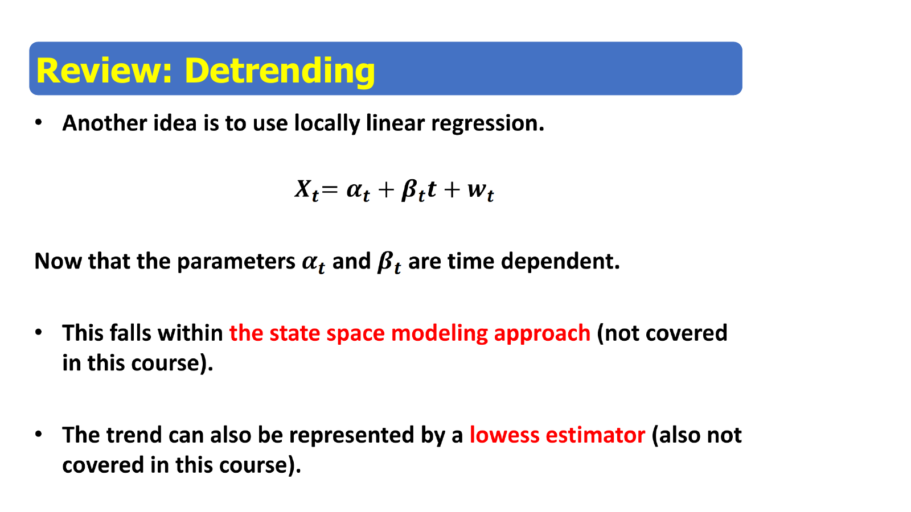
สไลด์ทบทวน detrending จาก Lesson 3 และชี้ว่ามีวิธีที่ยืดหยุ่นกว่าเส้นตรง คือให้ intercept และ slope เปลี่ยนตามเวลา \(X_t=\alpha_t+\beta_t t+w_t\) วิธีนี้อยู่ใน the state space modeling approach และอีกทางคือ lowess estimator ทั้งสองไม่อยู่ในวิชานี้ ข้อที่ต้องจำคือ trend เส้นตรงแบบคงที่ เช่น ที่ใช้กับ Xbox ในหัวข้อ 1 มีข้อจำกัด และถ้า trend ไม่ใช่เส้นตรงต้องหาวิธีอื่น
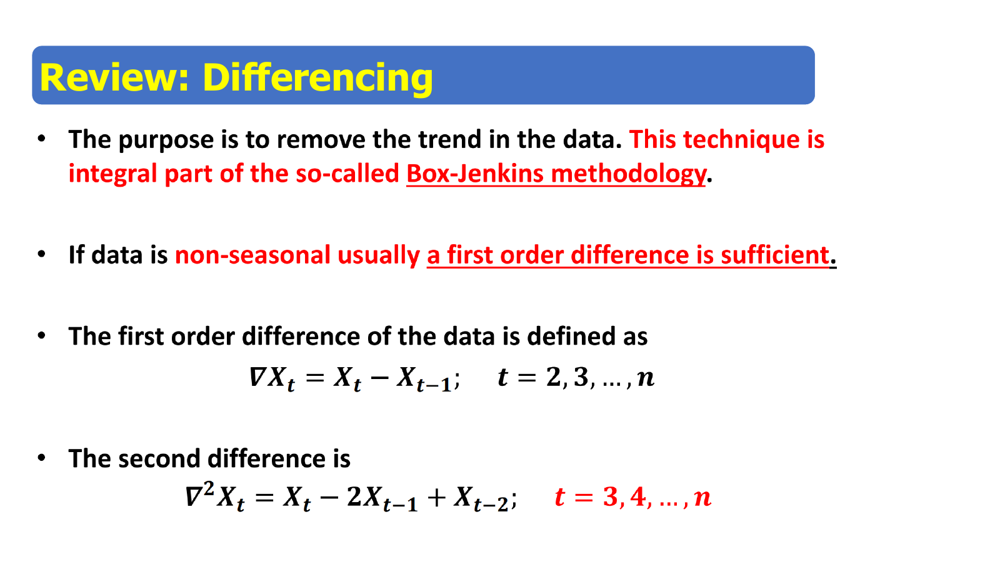
differencing This technique is integral part of the so-called Box-Jenkins methodology คือเป็นแกนของวิธีที่จะเรียน และ non-seasonal usually a first order difference is sufficient ตัวอย่าง: อนุกรม 10, 13, 16, 19 มี trend เส้นตรง ผลต่างครั้งแรกคือ 3, 3, 3 ไม่มี trend แล้ว ถ้าอนุกรมคือ \(t^2\) = 1, 4, 9, 16, 25 ผลต่างครั้งแรกคือ 3, 5, 7, 9 ยังเพิ่มขึ้น ผลต่างครั้งที่สองคือ 2, 2, 2 จึงนิ่ง สูตรผลต่างครั้งที่สอง \(\nabla^2X_t=X_t-2X_{t-1}+X_{t-2}\) เริ่มได้ที่ \(t=3\) เพราะต้องใช้สองค่าก่อนหน้า จำนวนครั้งที่ difference คือ d ใน ARIMA ซึ่งจะเรียนใน Lesson 6
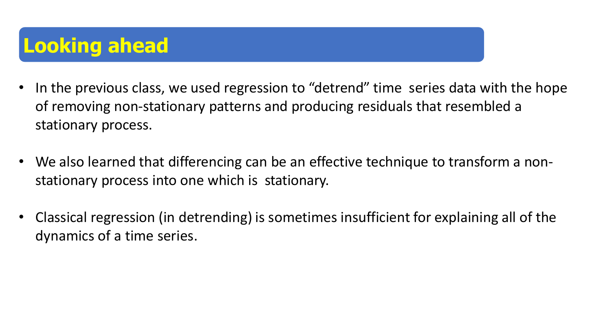
ข้อความสุดท้ายของหน้านี้คือเหตุผลของบททั้งบท: regression ใน detrending is sometimes insufficient for explaining all of the dynamics of a time series ตัวอย่างจาก Lesson 3: residual ของอุณหภูมิหลัง detrend ยังมี ACF ที่ lag 1 เท่ากับ 0.530 แปลว่า residual ปีนี้ยังสัมพันธ์กับปีก่อน regression มองแต่ trend จึงอธิบายความสัมพันธ์ข้ามเวลานี้ไม่ได้ ต้องมีโมเดลที่เขียนความสัมพันธ์นี้ตรง ๆ
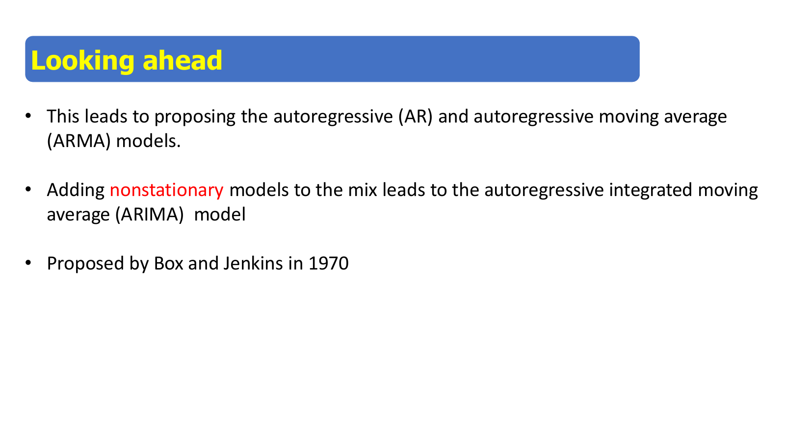
โมเดลที่ตอบโจทย์นี้คือ AR, ARMA และเมื่อเพิ่ม differencing เพื่อรองรับข้อมูลไม่นิ่งก็เป็น ARIMA เสนอโดย Box และ Jenkins ในปี 1970 ชื่อ ARIMA มาจากสามส่วนที่จะเรียนตามลำดับ: AR ในบทนี้ I (differencing) ใน Lesson 6 และ MA ในบทนี้
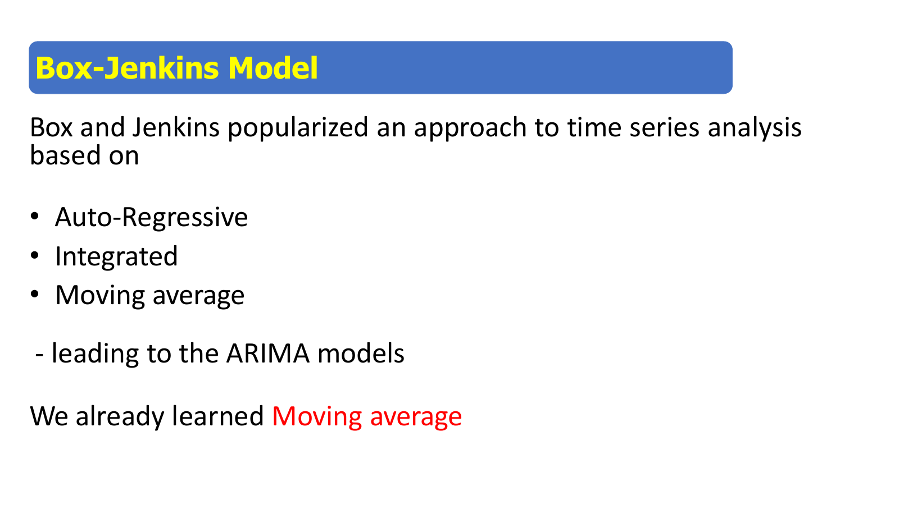
อาจารย์เตือนเรื่องชื่อ: "MA ตรงนี้ไม่ใช่อันเดียวกับ moving average ที่คุณเรียน 3 อาทิตย์ที่แล้ว ... ตอนเรียนครั้งแรกผมคิดว่ามันอันเดียวกัน" (Class 5, 1:06:21–1:07:10) moving average ใน Lesson 4 คือการเฉลี่ยค่าที่สังเกตได้ \(X\) เพื่อทำให้เรียบ ส่วน MA ในบทนี้คือโมเดลที่ \(X_t\) เป็นผลรวมถ่วงน้ำหนักของ white noise \(w\) ซึ่งสังเกตไม่ได้ ชื่อเหมือนกันแต่เป็นคนละเรื่อง
\(BX_t=X_{t-1}\), \(B^2X_t=X_{t-2}\), \(B^kX_t=X_{t-k}\) "B ไม่ใช่ B มันเป็น operator" (Class 5, 1:07:51) คือคำสั่ง "ถอยหลังหนึ่งช่วง" ไม่ใช่ตัวเลข ใช้กับ \(w\) ได้เหมือนกัน \(Bw_t=w_{t-1}\) differencing เขียนได้เป็น \(\nabla X_t=X_t-X_{t-1}=(1-B)X_t\) ประโยชน์ของ B คือทำให้เขียนโมเดลยาว ๆ เป็นพหุนามสั้น ๆ แล้วใช้พีชคณิตกับพหุนามนั้นได้ เช่น แยกตัวประกอบ
เริ่มจากคำถามง่าย ๆ: ราคาน้ำมันวันนี้ขึ้นกับอะไร ถ้าเมื่อวานมีข่าวสงคราม (shock) ราคาวันนี้ยังได้รับผลอยู่ พรุ่งนี้อาจยังเหลือผลนิดหน่อย แล้วหลังจากนั้นข่าวนั้นก็หมดผล MA(q) คือโมเดลของแนวคิดนี้: ค่าวันนี้คือผลรวมของ shock วันนี้กับ shock ย้อนหลัง q วัน shock ที่เก่ากว่า q วันไม่มีผลแล้ว
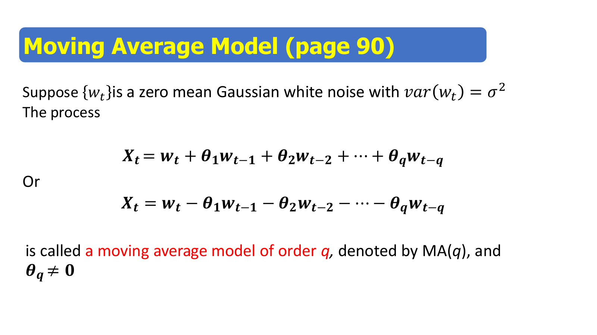
นิยามบนสไลด์คือ \(X_t=w_t+\theta_1w_{t-1}+\theta_2w_{t-2}+\dots+\theta_qw_{t-q}\) เรียกว่า a moving average model of order q โดย \(w_t\) เป็น Gaussian white noise mean 0 variance \(\sigma^2\) และ \(\theta_q\neq 0\) เงื่อนไขสุดท้ายนี้ทำให้ order ชัดเจน: ถ้า \(\theta_3=0\) โมเดลที่เขียนว่า MA(3) ก็คือ MA(2) อาจารย์อธิบายส่วนประกอบดังนี้ (Class 5, 1:09:48–1:15:28)
สไลด์ให้สองแบบ แบบเครื่องหมายบวกและแบบเครื่องหมายลบ \(X_t=w_t-\theta_1w_{t-1}-\dots\) หนังสือ Cryer and Chan ใช้แบบลบ ส่วน R (arima, arima.sim) และอาจารย์ในคาบนี้ใช้แบบบวก สองแบบต่างกันแค่เครื่องหมายของ θ: MA(1) แบบบวก θ = 0.5 คือโมเดลเดียวกับแบบลบ θ = −0.5 เวลาอ่านโจทย์ต้องดูว่าใช้แบบไหน
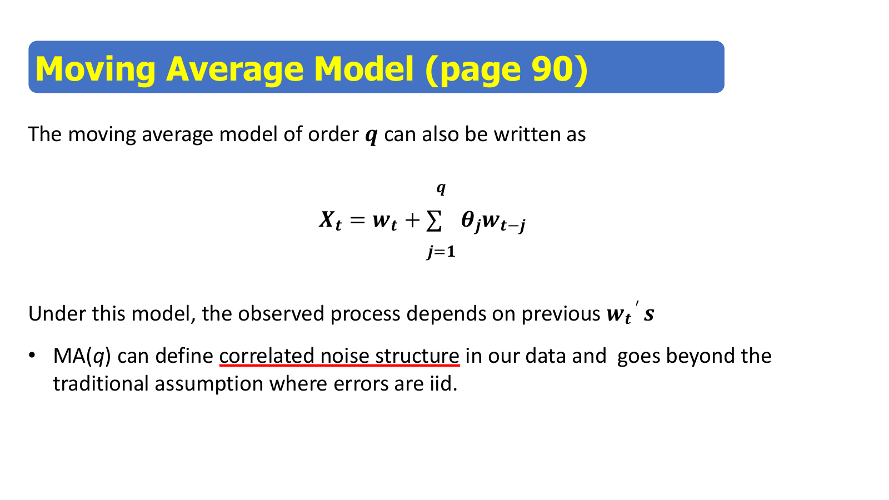
การเขียนด้วยผลรวม \(X_t=w_t+\sum_{j=1}^{q}\theta_jw_{t-j}\) สั้นกว่า สไลด์บอกความหมายเชิงสถิติว่า MA(q) can define correlated noise structure in our data and goes beyond the traditional assumption where errors are iid ใน regression ทั่วไปเราสมมุติว่า error แต่ละตัวอิสระกัน แต่ \(X_t\) กับ \(X_{t-1}\) ของ MA(1) ใช้ \(w_{t-1}\) ร่วมกัน จึงสัมพันธ์กัน MA จึงเป็นเครื่องมือเขียน error ที่สัมพันธ์กันข้ามเวลา
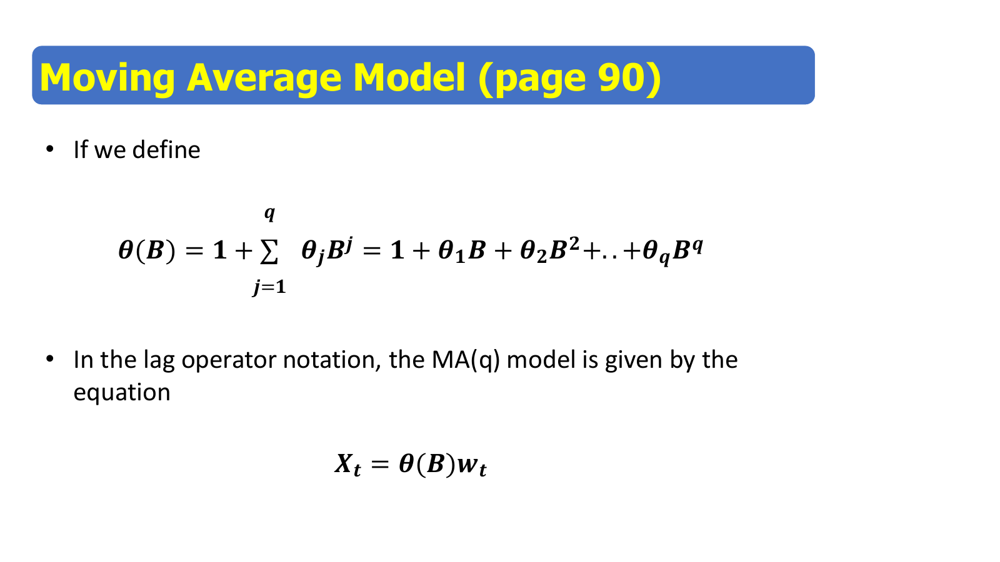
อาจารย์สอนการเขียนเป็นสามระดับ (Class 5, 1:15:31–1:19:02) ระดับแรก "มือสมัครเล่น" เขียนยาวทุกพจน์ ระดับสอง "นักสถิติ" ใช้ Σ "ดูเป็น professional ขึ้น" ระดับสาม advanced ใช้ B: เพราะ \(w_{t-j}=B^jw_t\) ทุกพจน์จึงมี \(w_t\) ร่วม ดึงออกมาได้
\(X_t=w_t+\theta_1Bw_t+\dots+\theta_qB^qw_t=(1+\theta_1B+\dots+\theta_qB^q)w_t=\theta(B)w_t\)
พหุนามในวงเล็บคือ characteristic function ของ MA(q) "ฟังก์ชันที่บอกนิสัยของ MA" (Class 5, 1:19:08) ตัวอย่าง: MA(2) ที่ θ₁ = 0.4, θ₂ = −0.3 เขียนได้เป็น \(X_t=(1+0.4B-0.3B^2)w_t\) การเขียนแบบนี้สำคัญเพราะ Lesson 6–7 จะแยกตัวประกอบพหุนามนี้เพื่อตรวจสมบัติของโมเดล
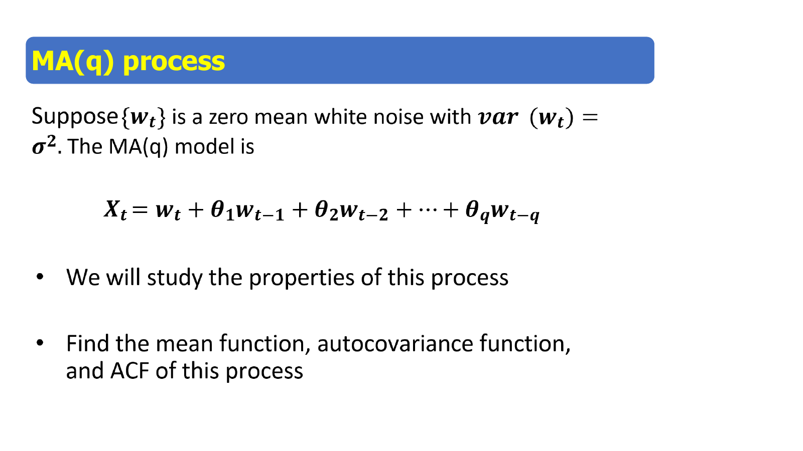
หน้านี้ตั้งงานที่ต้องทำกับทุกโมเดล คือหา mean, autocovariance function และ ACF เหตุผลคือข้อมูลจริงให้เราได้แค่ sample ACF ถ้ารู้ว่า ACF ตามทฤษฎีของ MA(q) มีหน้าตาอย่างไร เราจะเทียบรูปแล้วเลือกโมเดลได้ หัวข้อ 4 และ 6 จะทำงานนี้กับ MA(1) และ MA(2)
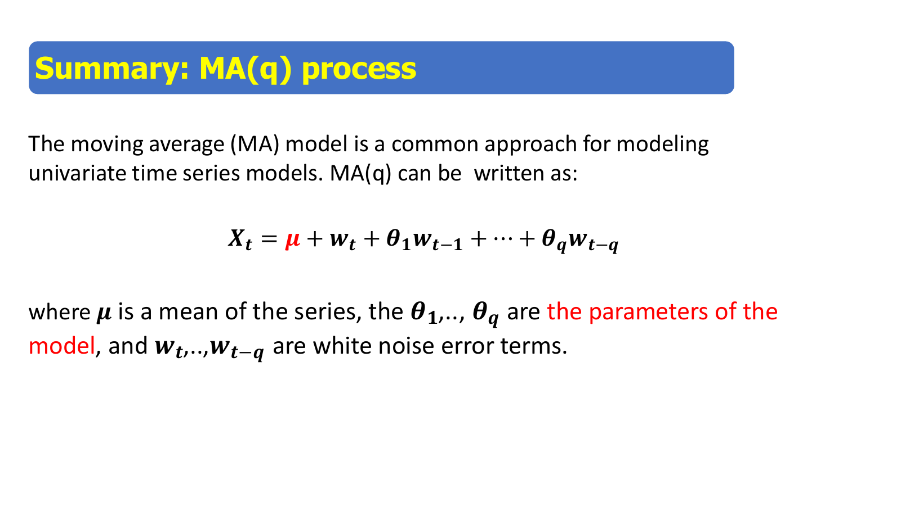
ในทางปฏิบัติอนุกรมไม่ได้แกว่งรอบศูนย์ สไลด์จึงเพิ่ม μ: \(X_t=\mu+w_t+\theta_1w_{t-1}+\dots+\theta_qw_{t-q}\) โดย μ คือ a mean of the series และ θ คือ the parameters of the model เมื่อหาค่าคาดหมายทุก \(w\) มี mean 0 จึงได้ \(E(X_t)=\mu\) พอดี R จะรายงาน μ ในชื่อ intercept "เพราะเขาเชื่อว่าอนุกรมไม่ได้แกว่งประมาณ 0" (Class 5, 1:42:22) การเพิ่ม μ ไม่เปลี่ยน autocovariance เพราะค่าคงที่ไม่มี covariance กับอะไร
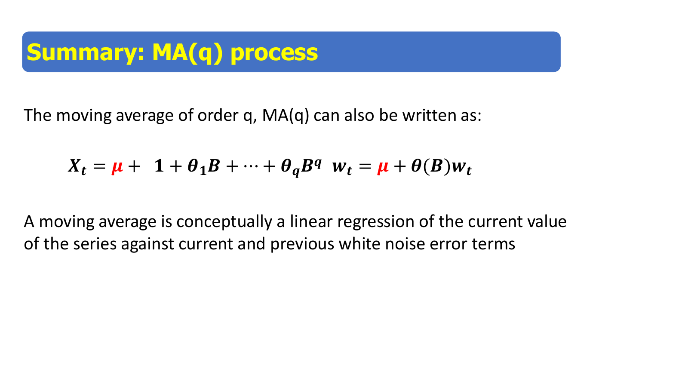
สไลด์สรุปว่า MA is conceptually a linear regression of the current value of the series against current and previous white noise error terms คือเหมือน regression ที่ตัวแปรต้นเป็น shock ย้อนหลัง ข้อต่างจาก regression จริงคือ shock สังเกตไม่ได้ จึงประมาณ θ ด้วย least squares ตรง ๆ ไม่ได้ ต้องใช้ maximum likelihood ซึ่ง R ทำให้ใน arima()
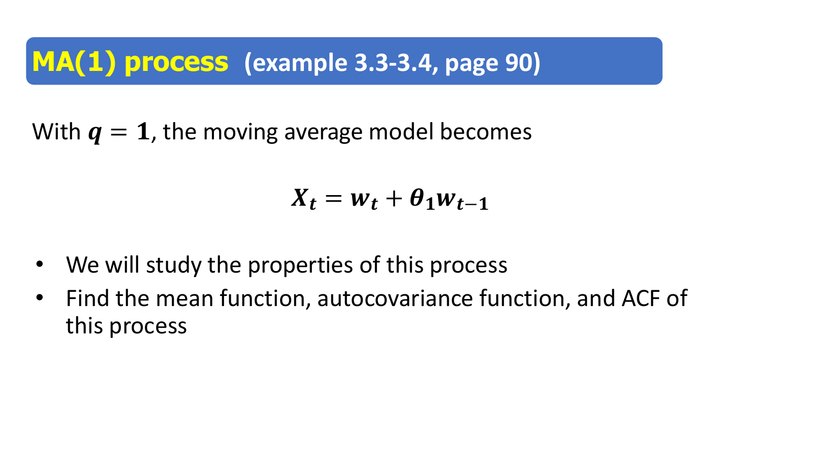
MA(1) คือ \(X_t=w_t+\theta w_{t-1}\) "ถ้ามี θ ตัวเดียวไม่ต้องห้อย 1" (Class 5, 1:13:19) งานคือหา mean, autocovariance และ ACF ทุกขั้นใช้กฎสองข้อของ white noise: \(\mathrm{Var}(w_t)=\sigma^2\) และ \(\mathrm{Cov}(w_s,w_t)=0\) เมื่อ \(s\neq t\)
\(E(X_t)=E(w_t)+\theta E(w_{t-1})=0+0=0\) "แกว่งประมาณเลขศูนย์ ถ้าอยากให้แกว่งรอบเลขอื่นค่อยเติม intercept ทีหลัง" (Class 5, 1:22:24)
\(\mathrm{Cov}(w_t+\theta w_{t-1},\,w_t+\theta w_{t-1})\) กระจายได้สี่คู่ คู่ที่ "ชนกัน" (ดัชนีเวลาเท่ากัน) คือ \(w_t\) กับ \(w_t\) ได้ \(\sigma^2\) และ \(\theta w_{t-1}\) กับ \(\theta w_{t-1}\) ได้ \(\theta^2\sigma^2\) อีกสองคู่เป็น 0 จึงได้ \(\gamma_0=\sigma^2(1+\theta^2)\) (Class 5, 1:23:39–1:25:21)
\(\mathrm{Cov}(w_t+\theta w_{t-1},\,w_{t+1}+\theta w_t)\) คู่ที่ชนกันมีคู่เดียวคือ \(w_t\) กับ \(\theta w_t\) จึงได้ \(\gamma_1=\theta\sigma^2\) (Class 5, 1:25:33–1:28:08)
\(\mathrm{Cov}(w_t+\theta w_{t-1},\,w_{t+2}+\theta w_{t+1})\) ดัชนี \(t, t-1\) ไม่ตรงกับ \(t+2, t+1\) เลย "ไม่มีตัวที่มันชนกันได้เลย" \(\gamma_h=0\) เมื่อ \(h\ge 2\)
หารด้วย \(\gamma_0\): \(\rho_0=1\), \(\rho_1=\dfrac{\theta\sigma^2}{\sigma^2(1+\theta^2)}=\dfrac{\theta}{1+\theta^2}\), \(\rho_h=0\) เมื่อ \(h\ge2\) σ² ตัดกันหมด ACF จึงขึ้นกับ θ อย่างเดียว
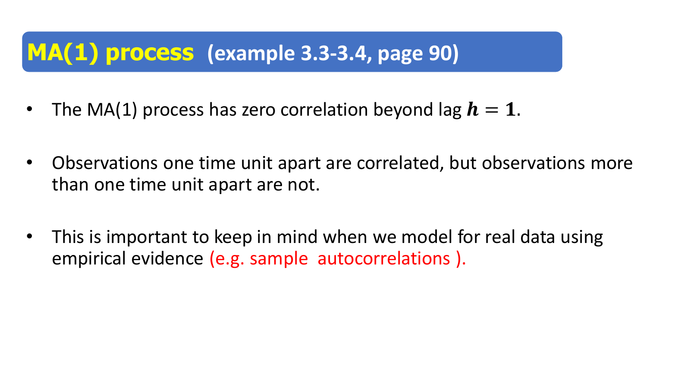
ผลข้างบนสรุปเป็นประโยคบนสไลด์: MA(1) มี correlation เป็นศูนย์หลัง lag 1 ค่าที่ห่างกันหนึ่งช่วงสัมพันธ์กัน ค่าที่ห่างกันมากกว่านั้นไม่สัมพันธ์ เหตุผลเชิงความหมายคือ \(X_t\) กับ \(X_{t-1}\) ใช้ shock \(w_{t-1}\) ร่วมกัน แต่ \(X_t\) กับ \(X_{t-2}\) ไม่มี shock ร่วมเลย สไลด์เน้นให้จำข้อนี้ไว้ใช้กับข้อมูลจริงผ่าน (e.g. sample autocorrelations ). คือถ้า sample ACF ทะลุเส้นที่ lag 1 แล้วอยู่ในเส้นทั้งหมด ให้สงสัยว่าเป็น MA(1) "ถ้า data นิสิตทำ correlogram ออกมาแล้วได้รูปข้างล่าง แสดงว่าน่าจะเป็น MA(1)" (Class 5, 1:31:31–1:33:42)
สำหรับทุกจำนวนจริง θ: \((1-|\theta|)^2\ge0\)
\(1-2|\theta|+\theta^2\ge0\) จึงได้ \(1+\theta^2\ge2|\theta|\)
\(\dfrac{|\theta|}{1+\theta^2}\le\dfrac12\) คือ \(|\rho_1|\le\tfrac12\)
เมื่อ \((1-|\theta|)^2=0\) คือ θ = 1 ได้ ρ₁ = 1/2 และ θ = −1 ได้ ρ₁ = −1/2
ความหมายของสมบัตินี้ในการใช้งาน: ถ้า sample ACF ที่ lag 1 เท่ากับ 0.8 แล้ว lag อื่นเป็นศูนย์ ข้อมูลนี้ไม่ใช่ MA(1) เพราะ MA(1) สร้าง ρ₁ เกิน 0.5 ไม่ได้ ต้องพิจารณาโมเดลอื่น เช่น AR
\(\rho_1=5/(1+25)=5/26=0.1923\)
\(\rho_1=0.2/(1+0.04)=0.2/1.04=0.1923\) เท่ากัน
\(\dfrac{1/\theta}{1+1/\theta^2}\) คูณเศษและส่วนด้วย θ² ได้ \(\dfrac{\theta}{\theta^2+1}\) ซึ่งคือ ρ₁ ของ θ
ทฤษฎีบอกว่า ρ₁ = 0.497 แต่ข้อมูลจริงมีแค่ n ค่า sample ACF จึงไม่เท่าทฤษฎีพอดี อาจารย์ให้ simulate ด้วย R เพื่อดูว่าข้อมูลที่มาจาก MA(1) จริงมีหน้าตาอย่างไร (การบ้าน Class 5, 1:56:17)
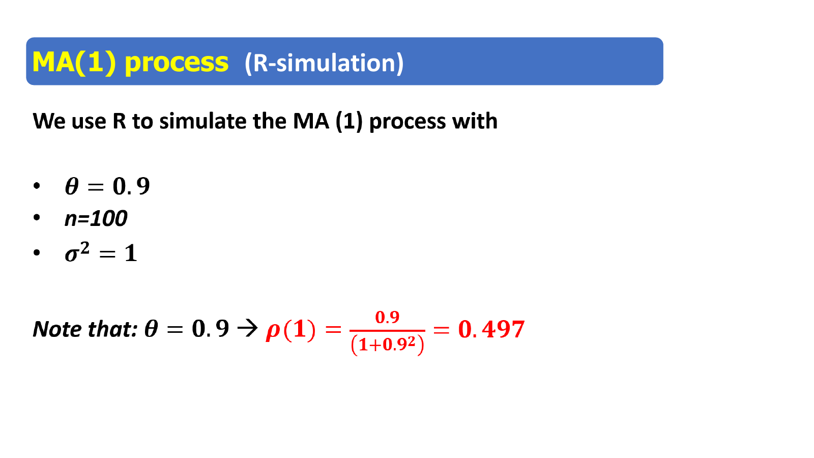
ตั้งค่า θ = 0.9, n = 100, σ² = 1 ค่าทฤษฎีคือ \(\rho_1=0.9/(1+0.81)=0.9/1.81=0.497\) ส่วนเส้นประของ sample ACF อยู่ที่ \(\pm2/\sqrt{n}=\pm2/\sqrt{100}=\pm0.2\) จาก Lesson 3 ดังนั้นคาดว่า lag 1 จะทะลุเส้นราว 0.5 และ lag อื่นจะอยู่ในช่วง ±0.2
ma.sim <- arima.sim(list(order = c(0,0,1), ma = 0.9), n = 100)
par(mfrow=c(2,1))
plot(ma.sim, ylab=expression(Y[t]), xlab="Time", type="o", main="MA(1) simulation")
acf(ma.sim, main="Sample ACF")| โค้ด | ทำอะไร |
|---|---|
| order = c(0,0,1) | ลำดับคือ (p, d, q) ตัวแรก p ของ AR ตัวกลาง d จำนวนครั้ง differencing ตัวสุดท้าย q ของ MA (Class 6, 0:22:47–0:25:02) MA(1) จึงเป็น c(0,0,1) |
| ma = 0.9 | ค่า θ ตาม convention เครื่องหมายบวก \(X_t=w_t+0.9w_{t-1}\) |
| n = 100 | ความยาวของอนุกรม w เป็น N(0, 1) โดยค่าเริ่มต้น |
| par(mfrow=c(2,1)) | แบ่งหน้าต่างกราฟเป็น 2 แถว 1 คอลัมน์ |
| type="o" | วาดทั้งจุดและเส้น |
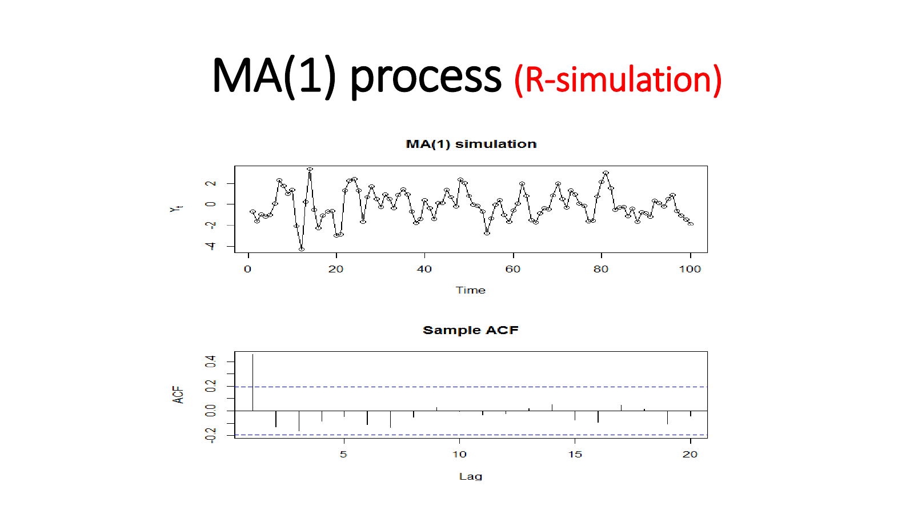
sample ACF ของการ simulate นี้ทะลุเส้นที่ lag 1 ราว 0.45 ใกล้ค่าทฤษฎี 0.497 และ lag 2 เป็นต้นไปอยู่ในเส้นประ จึงตรงกับรูปแบบ "ตัดหลัง lag 1" กราฟอนุกรมแกว่งรอบศูนย์และมีลักษณะเรียบกว่า white noise เล็กน้อย เพราะค่าติดกันใช้ shock ร่วมกันด้วยเครื่องหมายเดียวกัน ทุกครั้งที่รันได้ตัวเลขต่างกัน เช่น เมื่อใช้ set.seed(2603630) ได้ lag 1 = 0.412 ต่ำกว่าทฤษฎีแต่ยังทะลุเส้น 0.2
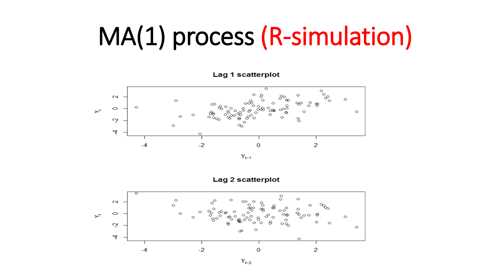
scatter plot เป็นอีกวิธีดู autocorrelation ที่ข้อสอบเคยให้ (Class 5, 1:50:48) แกนนอนคือ \(Y_{t-1}\) แกนตั้งคือ \(Y_t\) ทุกจุดคือคู่ของค่าที่ห่างกันหนึ่งช่วง ที่ lag 1 จุดเรียงตัวเอียงขึ้นอย่างหลวม ๆ ตรงกับ ρ₁ ≈ 0.5 ซึ่งเป็นความสัมพันธ์บวกระดับปานกลาง ที่ lag 2 จุดกระจายเป็นก้อนกลมไม่มีทิศทาง ตรงกับ ρ₂ = 0 โค้ดใช้ zlag() จาก package TSA เพื่อเลื่อนอนุกรมไปหนึ่งหรือสองช่วง
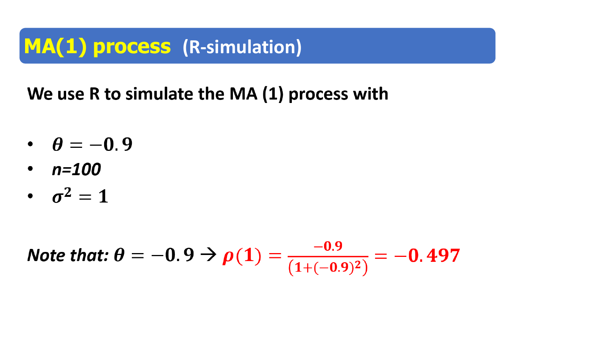
เมื่อ θ = −0.9 ค่าทฤษฎีคือ \(\rho_1=-0.9/(1+0.81)=-0.497\) ขนาดเท่าเดิม เครื่องหมายกลับ เพราะ θ² ในตัวส่วนไม่สนเครื่องหมาย ส่วนตัวเศษ θ กำหนดเครื่องหมาย ความหมายคือ shock ที่ทำให้วันนี้สูงจะทำให้พรุ่งนี้ต่ำ
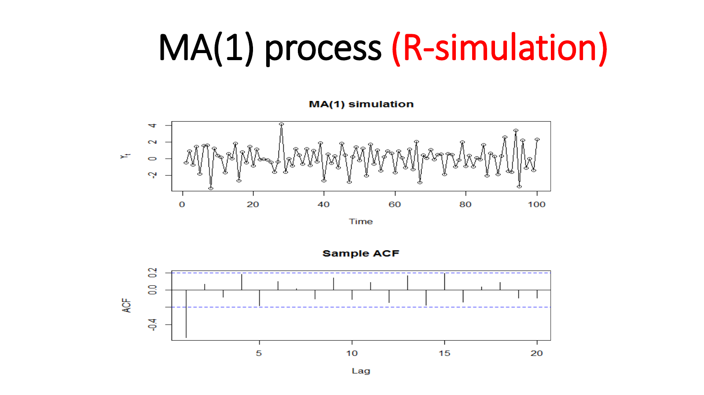
sample ACF ที่ lag 1 ติดลบราว −0.45 ทะลุเส้นล่าง และ lag อื่นอยู่ในเส้น กราฟอนุกรมดูหยักกว่ากรณี θ = 0.9 มาก ขึ้นลงสลับกันเกือบทุกจุด เพราะค่าที่ติดกันมีความสัมพันธ์ทางลบ จุดนี้ช่วยอ่านกราฟในข้อสอบ: อนุกรมที่ฟันเลื่อยถี่ ๆ บ่งบอก ρ₁ ติดลบ
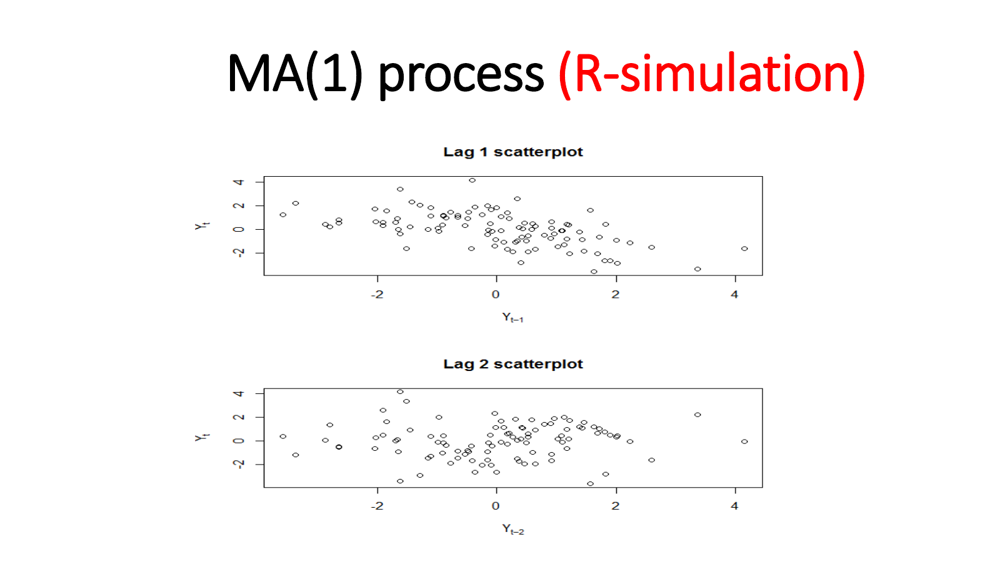
scatter plot ที่ lag 1 เอียงลง (Class 5, 1:51:38–1:52:28) ตรงกับ ρ₁ = −0.497 และที่ lag 2 ไม่มีทิศทาง ตรงกับ ρ₂ = 0 เทียบกับหน้า 13 จะเห็นว่าความชันของกลุ่มจุดที่ lag 1 บอกเครื่องหมายของ θ ได้ทันที
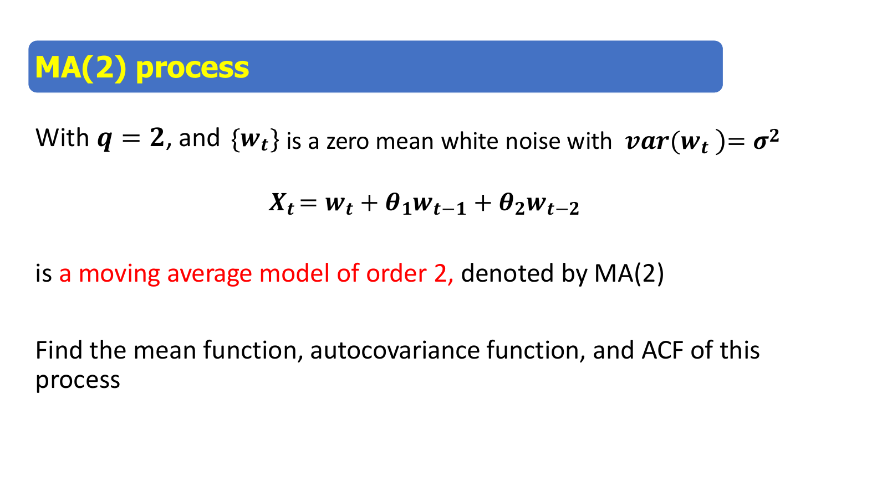
MA(2) คือ \(X_t=w_t+\theta_1w_{t-1}+\theta_2w_{t-2}\) a moving average model of order 2, อาจารย์อธิบายว่าอนุกรม "ถูกพยากรโดยปัจจัยอื่นย้อนหลัง 2 จุดเวลา" (Class 5, 1:40:31) วิธีหา property เหมือน MA(1) ทุกอย่าง ต่างแค่มีพจน์มากขึ้น อาจารย์บอกว่า γ₀ กระจายได้ 9 เทอม "เหลือ 3" (Class 5, 1:43:05–1:45:48)
\(\mathrm{Cov}(X_t,X_t)\): ดัชนีของ \(X_t\) คือ \(t, t-1, t-2\) จับคู่กับตัวเองได้สามคู่ \(\sigma^2+\theta_1^2\sigma^2+\theta_2^2\sigma^2\) จึงได้ \(\gamma_0=\sigma^2(1+\theta_1^2+\theta_2^2)\)
\(X_{t+1}=w_{t+1}+\theta_1w_t+\theta_2w_{t-1}\) มีดัชนี \(t+1, t, t-1\) ตรงกับ \(X_t\) สองตัว: ดัชนี t ได้ \(1\cdot\theta_1\) และดัชนี t − 1 ได้ \(\theta_1\cdot\theta_2\) จึงได้ \(\gamma_1=(\theta_1+\theta_1\theta_2)\sigma^2\)
\(X_{t+2}=w_{t+2}+\theta_1w_{t+1}+\theta_2w_t\) ตรงกับ \(X_t\) ตัวเดียวที่ดัชนี t ได้ \(1\cdot\theta_2\) จึงได้ \(\gamma_2=\theta_2\sigma^2\)
ดัชนีของ \(X_{t+3}\) คือ \(t+3, t+2, t+1\) ไม่ตรงกับ \(t, t-1, t-2\) เลย จึงเป็น 0 (Class 5, 1:45:48–1:46:44)
\(\rho_1=\dfrac{\theta_1+\theta_1\theta_2}{1+\theta_1^2+\theta_2^2}\), \(\rho_2=\dfrac{\theta_2}{1+\theta_1^2+\theta_2^2}\), \(\rho_h=0\) เมื่อ \(h\ge3\) (Class 5, 1:47:21–1:47:59)
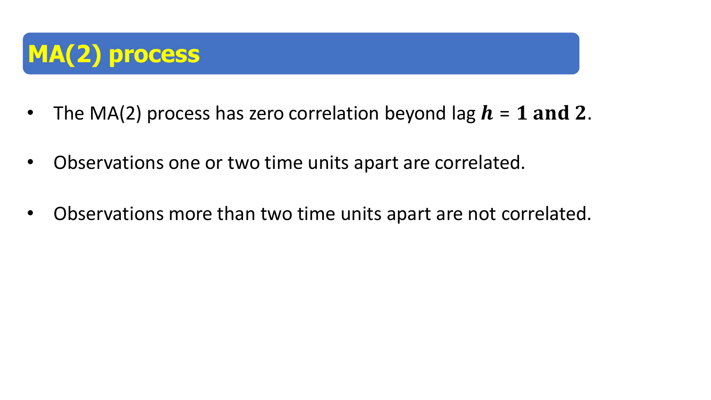
สรุปเหมือน MA(1): ค่าที่ห่างกันหนึ่งหรือสองช่วงสัมพันธ์กัน เพราะยังมี shock ร่วมกัน ค่าที่ห่างกันเกินสองช่วงไม่มี shock ร่วมเลยจึงไม่สัมพันธ์ ดังนั้น sample ACF ของ MA(2) ควรทะลุเส้นที่ lag 1 และ 2 แล้วอยู่ในเส้นตั้งแต่ lag 3
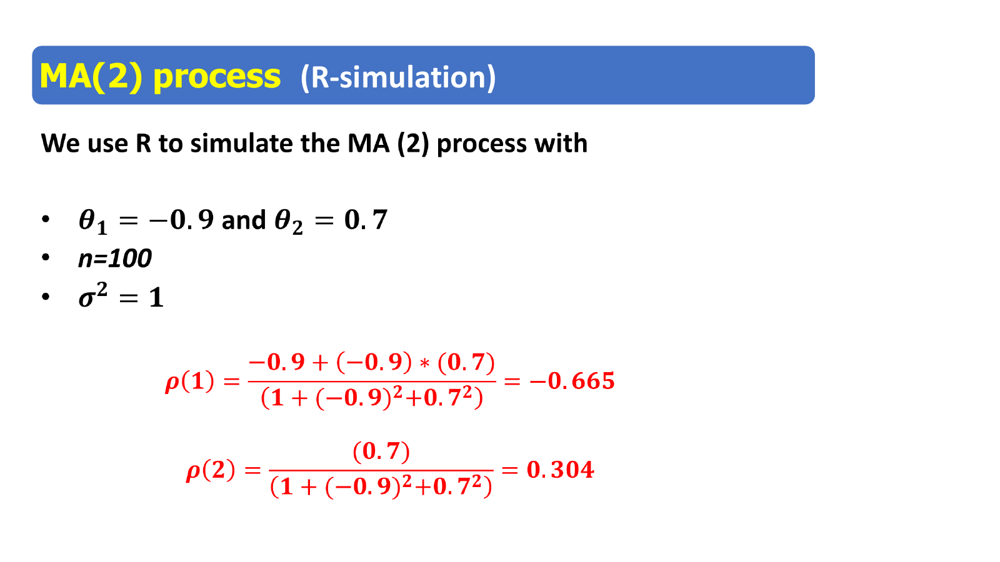
แทนค่า θ₁ = −0.9, θ₂ = 0.7: ตัวส่วน \(1+0.81+0.49=2.30\) ตัวเศษของ ρ₁ คือ \(-0.9+(-0.9)(0.7)=-0.9-0.63=-1.53\) จึงได้ \(\rho_1=-1.53/2.30=-0.665\) และ \(\rho_2=0.7/2.30=0.304\) สังเกตว่า |ρ₁| = 0.665 เกิน 0.5 ได้ ข้อจำกัด |ρ₁| ≤ 1/2 เป็นของ MA(1) เท่านั้น เพราะ MA(2) มีพจน์ θ₁θ₂ เพิ่มเข้ามา
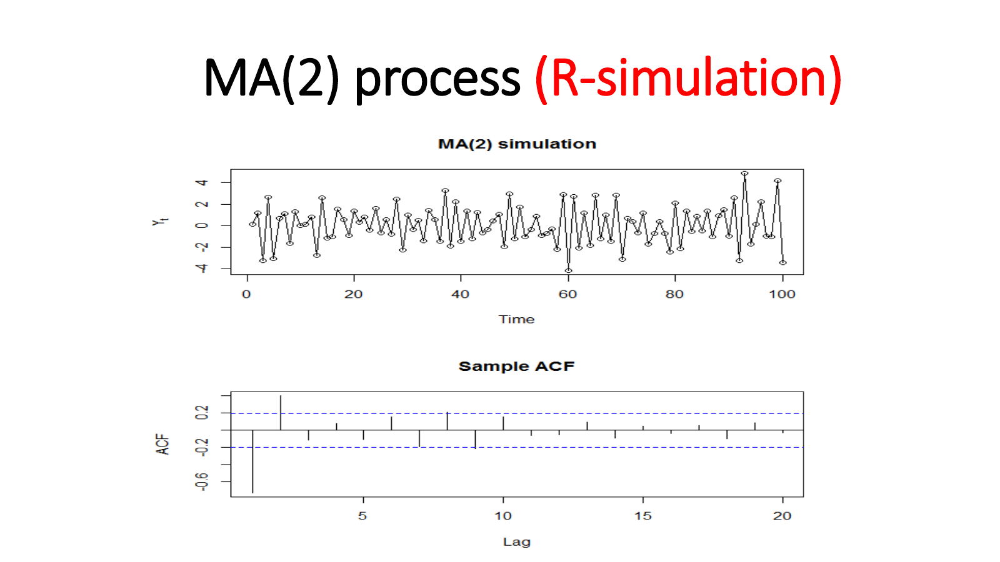
sample ACF ทะลุเส้นที่ lag 1 ทางลบราว −0.65 และ lag 2 ทางบวกราว 0.3 ใกล้ค่าทฤษฎี −0.665 และ 0.304 หลังจากนั้นอยู่ในเส้นประ จึงเป็นรูปแบบ "ตัดหลัง lag 2" เมื่อรันซ้ำด้วย set.seed(2603630) ได้ −0.661 และ 0.259 ส่วน lag 3 = 0.006 กราฟอนุกรมหยักถี่เพราะ ρ₁ ติดลบมาก (Class 5, 1:52:53–1:54:16)
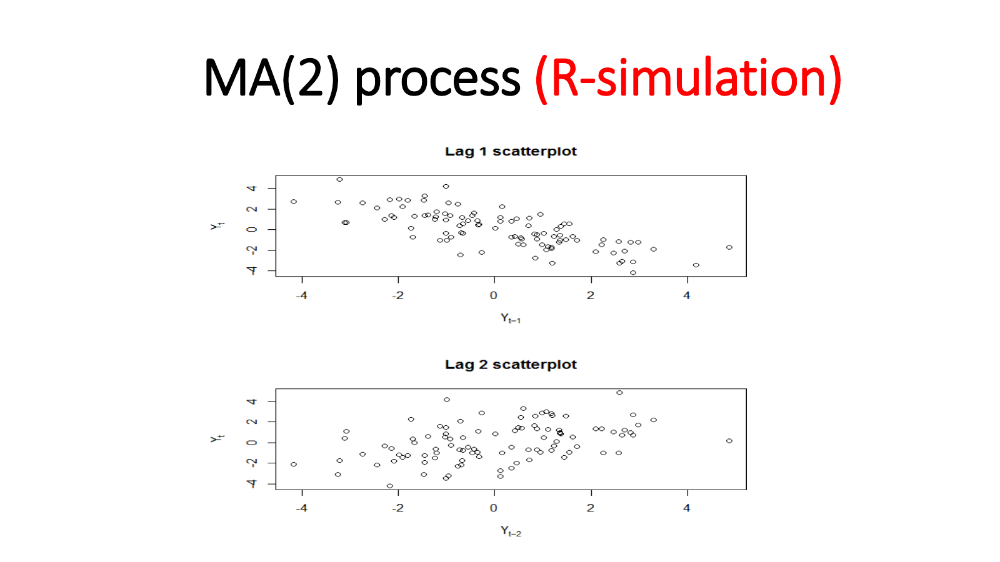
scatter plot lag 1 เอียงลงชัดเจนตาม ρ₁ = −0.665 ส่วน lag 2 เอียงขึ้นเล็กน้อยตาม ρ₂ = 0.304 ความชันของกลุ่มจุดในสองรูปนี้จึงตรงกับเครื่องหมายและขนาดของ ρ₁ และ ρ₂ ถ้าข้อสอบให้ scatter plot มาแทน ACF ก็อ่านแบบเดียวกัน: กลุ่มจุดเอียงชัดคือสัมพันธ์มาก กลุ่มจุดกลมคือไม่สัมพันธ์
จาก MA(1) และ MA(2) ได้รูปทั่วไป ให้ \(\theta_0=1\) แล้ว
\(\gamma_h=\sigma^2\sum_{j=0}^{q-h}\theta_j\theta_{j+h}\) เมื่อ \(0\le h\le q\) และ \(\gamma_h=0\) เมื่อ \(h>q\)
ตรวจกับ MA(2) ที่ h = 1: \(\theta_0\theta_1+\theta_1\theta_2=\theta_1+\theta_1\theta_2\) ตรงกับข้างบน ข้อสรุปที่ต้องจำคือ MA(q): autocorrelation มีนัยสำคัญจนถึง lag q หลังจาก lag q เป็น 0 (Class 5, 1:48:17–1:49:45) ACF จึงเป็นเครื่องมือหา q ของ MA โดยตรง: ดู lag สุดท้ายที่ทะลุเส้น
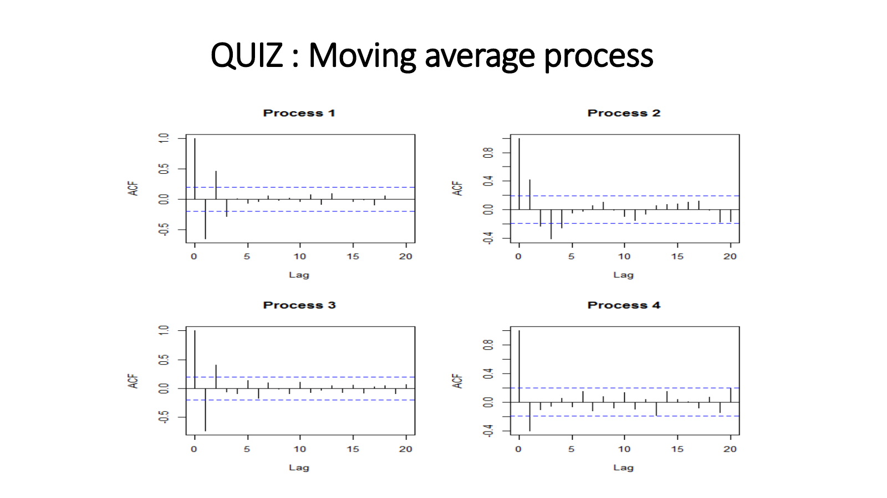
โจทย์ข้อสอบเก่าให้ ACF สี่กราฟแล้วถามว่าแต่ละกราฟเป็น MA อันดับเท่าไร กับดักคือแท่งแรกสูงเท่ากับ 1 อยู่ที่ lag 0 ซึ่งทุกอนุกรมมีค่า 1 เสมอ ไม่ได้บอกอะไร "ถ้าคุณตอบ MA(4) แสดงว่าคุณดูข้างซ้ายผิด เพราะมันเริ่มจาก lag 0 ... มีคนตอบ MA(4) ด้วย ผมเคยเก็บแล้วก็ศูนย์ทันที" (Class 5, 1:54:30–1:56:08) อ่านทีละกราฟโดยนับจาก lag 1 และหา lag สุดท้ายที่ทะลุเส้นประ ±0.2
| กราฟ | lag ที่ทะลุเส้น (ประมาณ) | คำตอบ |
|---|---|---|
| Process 1 | lag 1 ≈ −0.6, lag 2 ≈ +0.45, lag 3 ≈ −0.25 หลังจากนั้นอยู่ในเส้น | MA(3) |
| Process 2 | lag 1 ≈ +0.4, lag 3 ≈ −0.35, lag 4 ≈ −0.25 ส่วน lag 2 อยู่ใกล้เส้น | MA(4) |
| Process 3 | lag 1 ≈ −0.7, lag 2 ≈ +0.4 | MA(2) |
| Process 4 | lag 1 ≈ −0.35 | MA(1) |
Process 2 สอนอีกเรื่อง: order คือ lag สุดท้ายที่ไม่เป็นศูนย์ แม้ lag กลางบางตัวจะเล็กจนอยู่ในเส้นก็ไม่เปลี่ยนคำตอบ เพราะ MA(4) อาจมีค่า \(\rho_2\) ใกล้ศูนย์ได้ถ้า θ ทำให้ผลรวม \(\theta_2+\theta_1\theta_3+\theta_2\theta_4\) เล็ก เฉลยของอาจารย์คือ Process 1 = MA(3), 2 = MA(4), 3 = MA(2), 4 = MA(1) (Class 5, 1:55:28) ใน Class 6 อาจารย์เล่าว่าวิธีนี้ "สมัยก่อน ... 20 ปีที่แล้ว" ใช้หา q จริง ปัจจุบันใช้ฟังก์ชันอัตโนมัติ แต่ข้อสอบภาค concept ยังถามได้ (Class 6, 0:16:57, 0:18:23)
MA ใช้ shock ย้อนหลังอธิบายค่าวันนี้ AR ใช้ค่าของตัวเองย้อนหลัง ตัวอย่างในชีวิตจริง: อุณหภูมิห้องตอนนี้ใกล้กับอุณหภูมิเมื่อชั่วโมงก่อน บวกการเปลี่ยนแปลงสุ่มเล็กน้อย "AR มีความยากกว่า MA นิดนึง" (Class 5, 1:57:11) เพราะ \(X_{t-1}\) เองก็มาจาก \(X_{t-2}\) ต่อไปเรื่อย ๆ เวลาหา covariance จึง "ไล่ แล้วมันก็จะชนไปเรื่อย ๆ" (Class 6, 0:00:16)
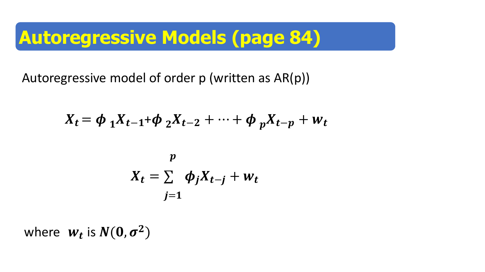
AR(p) คือ \(X_t=\phi_1X_{t-1}+\phi_2X_{t-2}+\dots+\phi_pX_{t-p}+w_t\) หรือ \(X_t=\sum_{j=1}^{p}\phi_jX_{t-j}+w_t\) โดย \(w_t\sim N(0,\sigma^2)\) p คือ order และเป็นจำนวนพารามิเตอร์ φ ตัวแปรสุ่มคือ \(X\) และ \(w\) ส่วน φ เป็นสัมประสิทธิ์ (Class 5, 1:57:25–1:58:49) ความหมายตามที่อาจารย์สรุป: "ค่าของอนุกรมเวลาเวลา t สามารถพยากรด้วยค่าของตัวมันเองย้อนหลัง p ค่า" ขณะที่ MA "ถูกพยากรด้วยปัจจัยอื่นที่ไม่ได้เก็บมาย้อนหลัง q ค่า" (Class 5, 2:03:47–2:04:43)
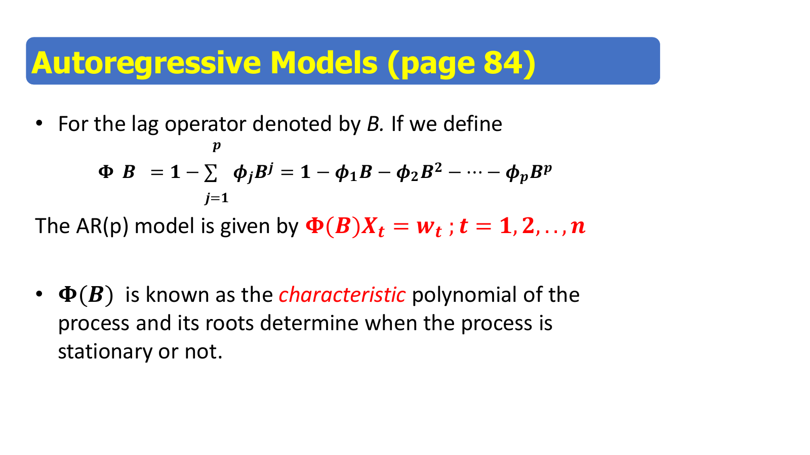
การเขียนแบบ backshift ต้องย้ายพจน์ X ทั้งหมดไปซ้าย: \(X_t-\phi_1X_{t-1}-\dots-\phi_pX_{t-p}=w_t\) แล้วดึง \(X_t\) ออก ได้ \((1-\phi_1B-\dots-\phi_pB^p)X_t=w_t\) หรือ 𝚽(𝑩)𝑿𝒕= 𝒘𝒕; 𝒕= 𝟏, 𝟐, . . , 𝒏 "ต่างจาก MA ที่ดึง w_t ออก อันนี้ดึง X_t ออก" (Class 5, 1:58:49–2:01:55) สังเกตเครื่องหมาย: θ(B) ของ MA เป็นบวก \(1+\theta_1B+\dots\) แต่ Φ(B) ของ AR เป็นลบ \(1-\phi_1B-\dots\) เพราะเกิดจากการย้ายข้าง Φ(B) เรียกว่า characteristic polynomial และรากของมันบอกว่าอนุกรมนิ่งหรือไม่ (หัวข้อ 10) ตัวอย่าง: \(X_t=0.5X_{t-1}+0.3X_{t-2}+w_t\) เขียนได้เป็น \((1-0.5B-0.3B^2)X_t=w_t\)
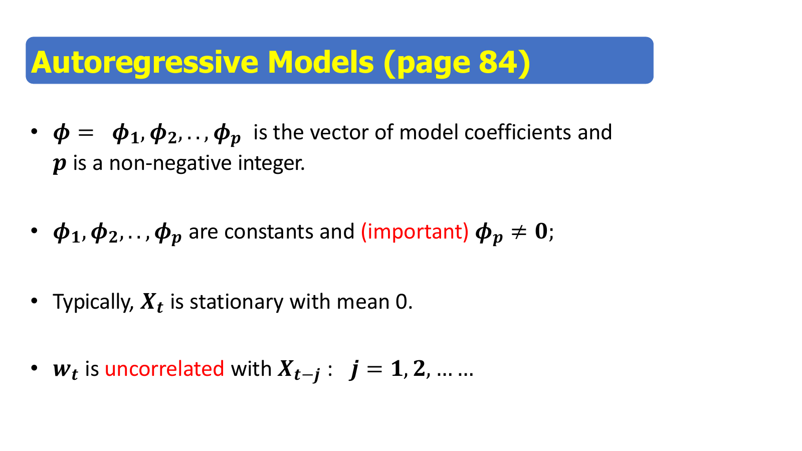
สไลด์ระบุเงื่อนไขสี่ข้อ ข้อที่ต้องจำคือ \(\phi_p\neq0\) ซึ่งสไลด์เขียนว่า (important) เหตุผลเดียวกับ \(\theta_q\neq0\) ของ MA: ถ้า φ ตัวสุดท้ายเป็นศูนย์ order ก็ลดลง อีกข้อคือ \(w_t\) เป็น uncorrelated กับ \(X_{t-j}\) ทุก j ≥ 1 แปลว่า shock ใหม่ไม่เกี่ยวกับอดีต ข้อนี้คือกุญแจของการหา γ₀ ในหัวข้อ 9 เพราะทำให้ \(\mathrm{Cov}(X_{t-1},w_t)=0\)
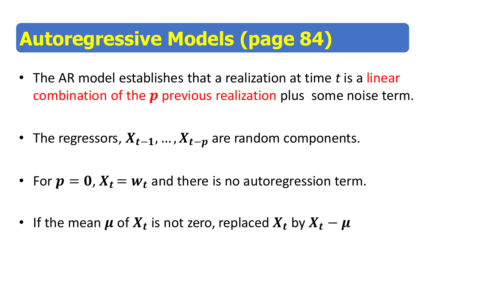
สไลด์สรุปว่า AR บอกว่าค่า ณ เวลา t คือ linearcombination of the 𝒑previous realization บวก noise จุดต่างจาก regression ปกติคือตัวแปรต้น \(X_{t-1},\dots,X_{t-p}\) เป็นตัวแปรสุ่ม ไม่ใช่ค่าคงที่ที่เรากำหนด ถ้า p = 0 จะเหลือ \(X_t=w_t\) คือ white noise และถ้า mean μ ไม่เป็นศูนย์ให้ใช้ \(X_t-\mu\) แทน \(X_t\)
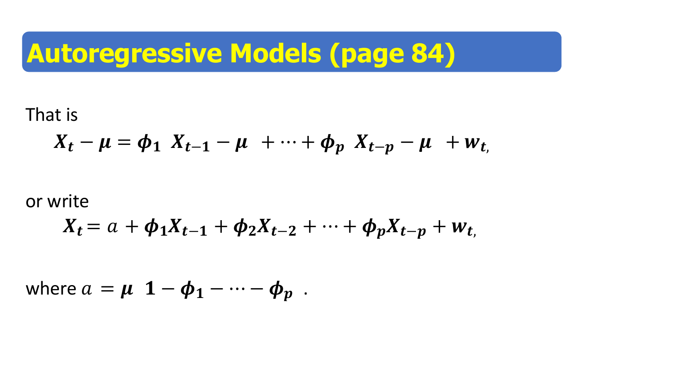
แทน \(X_t-\mu\) ลงในโมเดล: \(X_t-\mu=\phi_1(X_{t-1}-\mu)+\dots+\phi_p(X_{t-p}-\mu)+w_t\) ย้าย μ ทั้งหมดมารวมกันได้ \(X_t=a+\phi_1X_{t-1}+\dots+\phi_pX_{t-p}+w_t\) โดย \(a=\mu(1-\phi_1-\dots-\phi_p)\)
AR(1): \(X_t=5+0.75X_{t-1}+w_t\) mean ของอนุกรมคือเท่าไร
อนุกรมนิ่งมี \(E(X_t)=E(X_{t-1})=\mu\) จึงได้ \(\mu=5+0.75\mu\)
\(0.25\mu=5\) ได้ \(\mu=20\) ตรงกับสูตร \(a=\mu(1-\phi)=20(0.25)=5\)
arima() ใน R รายงานค่าที่ชื่อ intercept แต่ค่านั้นคือ μ ไม่ใช่ a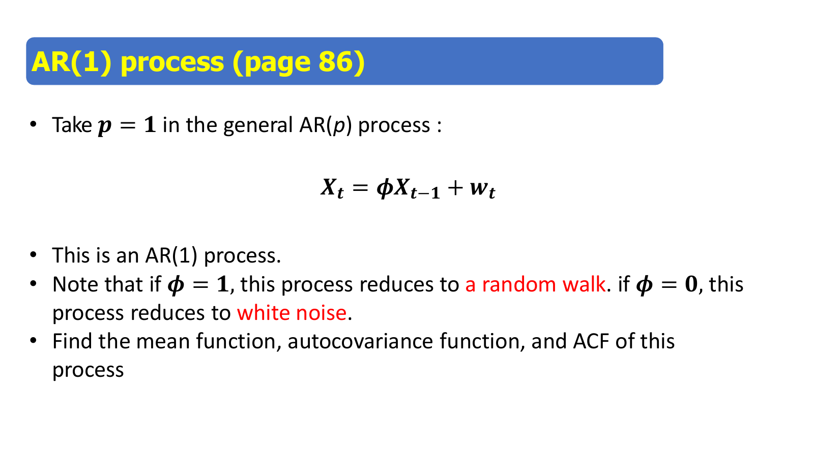
ตั้ง p = 1 ได้ AR(1) \(X_t=\phi X_{t-1}+w_t\) สไลด์ชี้สองกรณีพิเศษที่เชื่อมกับ Lesson 1: ถ้า φ = 1 จะเป็น a random walk \(X_t=X_{t-1}+w_t\) และถ้า φ = 0 จะเป็น white noise AR(1) จึงอยู่ระหว่างสองขั้วนี้ φ ใกล้ 0 คือแทบไม่จำอดีต φ ใกล้ 1 คือจำอดีตมากจนเกือบเป็น random walk การบ้านจาก Class 5 คือหา γ₀, γ₁, γ₂ ของ AR(1) "มันจะยากกว่า MA นิดนึง ... มันไม่ได้ตรง ๆ" (Class 5, 2:04:53) อาจารย์เฉลยต้น Class 6
ถ้าอนุกรมนิ่ง ค่าคาดหมายและ variance ไม่ขึ้นกับเวลา จึงใช้ \(E(X_t)=E(X_{t-1})\) และ \(\mathrm{Var}(X_t)=\mathrm{Var}(X_{t-1})=\gamma_0\) แทนการไล่แทนค่าย้อนหลังไม่รู้จบ
\(E(X_t)=\phi E(X_{t-1})+0\) จึงได้ \(\mu=\phi\mu\) หรือ \(\mu(1-\phi)=0\) เมื่อ φ ≠ 1 ได้ \(\mu=0\)
\(\mathrm{Var}(\phi X_{t-1}+w_t)=\phi^2\mathrm{Var}(X_{t-1})+\sigma^2\) (ไม่มีพจน์ covariance เพราะ \(w_t\) ไม่สัมพันธ์กับ \(X_{t-1}\)) จึงได้ \(\gamma_0=\phi^2\gamma_0+\sigma^2\) แก้สมการได้ \(\gamma_0=\dfrac{\sigma^2}{1-\phi^2}\) "อันนี้สำคัญมาก" (Class 6, 0:04:21)
\(\mathrm{Cov}(X_t,X_{t+1})=\mathrm{Cov}(X_t,\phi X_t+w_{t+1})=\phi\gamma_0+0\) "X_t คูณตัวนี้เป็น 0 แต่ X_t เจอตัวนี้ไม่เป็น 0" (Class 6, 0:05:09–0:06:29) ได้ \(\gamma_1=\phi\gamma_0\)
\(\mathrm{Cov}(X_t,\phi X_{t+1}+w_{t+2})=\phi\gamma_1=\phi^2\gamma_0\) ทำซ้ำได้ \(\gamma_h=\phi^h\gamma_0\)
\(\rho_h=\gamma_h/\gamma_0=\phi^h\)
สูตร γ₀ อธิบายได้สองเรื่อง เรื่องแรก ตัวส่วน \(1-\phi^2\) ต้องเป็นบวก variance จึงมีความหมาย ต้องมี \(|\phi|<1\) เรื่องที่สอง เมื่อ φ เข้าใกล้ 1 ตัวส่วนเข้าใกล้ 0 variance จึงโตไม่จำกัด ตรงกับ random walk ใน Lesson 1 ที่ variance เท่ากับ \(t\sigma^2\) โตตามเวลา และเปรียบเทียบกับ MA(1): variance ของ MA(1) คือ \(\sigma^2(1+\theta^2)\) จำกัดเสมอไม่ว่า θ เป็นเท่าไร MA จึงนิ่งเสมอ แต่ AR นิ่งเฉพาะเมื่อ φ อยู่ในช่วงที่กำหนด
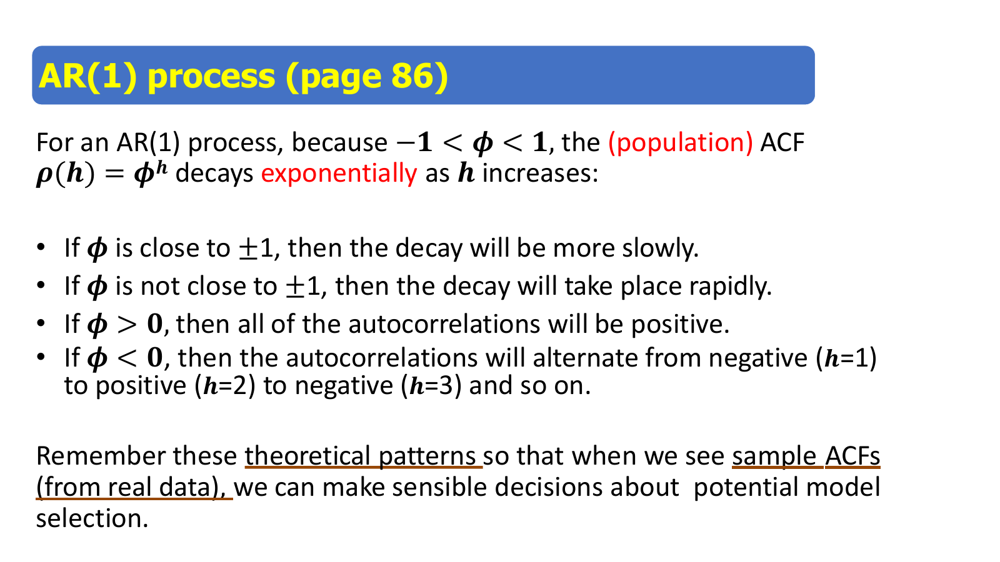
เพราะ (population) ACF คือ \(\rho_h=\phi^h\) และ |φ| < 1 ค่าจึงลดลง exponentially ไม่ตัดเป็นศูนย์ทันทีเหมือน MA อาจารย์วาดสี่กรณีด้วยตัวเลขจริง (Class 6, 0:10:35–0:15:06)
| φ | ρ₁, ρ₂, ρ₃, ρ₄ | รูปร่าง |
|---|---|---|
| 0.9 | 0.9, 0.81, 0.729, 0.656 | บวกทั้งหมด ลดช้ามาก ต้องถึง lag 16 จึงต่ำกว่า 0.2 (\(0.9^{16}=0.185\)) |
| 0.5 | 0.5, 0.25, 0.125, 0.0625 | บวกทั้งหมด ลดเร็ว ต่ำกว่า 0.2 ตั้งแต่ lag 3 |
| −0.9 | −0.9, 0.81, −0.729, 0.656 | สลับบวกลบ (กำลังคี่ติดลบ กำลังคู่เป็นบวก) ขนาดลดช้า |
| −0.5 | −0.5, 0.25, −0.125, 0.0625 | สลับบวกลบ ลดเร็ว |
อาจารย์เรียกรูปแบบนี้ว่า tail off หรือ decay slowly สไลด์ให้จำรูปแบบเหล่านี้ไว้เทียบกับ sample ACF ของข้อมูลจริง และอาจารย์เตือนว่า "Data จริงมันอาจจะไม่ได้ perfect แบบนี้ ... แต่ถ้ามันใกล้เคียงสัก 80% เราก็คิดว่ามันน่าจะเป็นแบบนี้" (Class 6, 0:15:13) ข้อเชื่อมกับ Lesson 3: อุณหภูมิโลกมี ACF lag 1 = 0.819 และลดลงช้า ๆ ถึง lag 16 คล้าย AR(1) ที่ φ ใกล้ 0.9 มาก แต่ในกรณีนั้นสาเหตุคือ trend ไม่ใช่ AR ต้องตรวจความนิ่งก่อนเสมอ
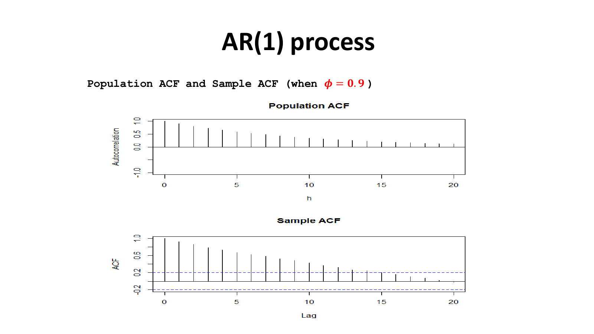
population ACF ลดลงตาม 0.9, 0.81, 0.729 อย่างสม่ำเสมอ sample ACF จากข้อมูล 100 ค่ามีรูปแบบเดียวกันแต่ไม่เรียบเท่า เมื่อรันด้วย set.seed(2603630) ได้ sample ACF 0.905, 0.826, 0.760, 0.698 ใกล้ทฤษฎีมาก และ arima(a, order = c(1,0,0)) ประมาณ φ ได้ 0.9105 (s.e. 0.0391) ข้อสังเกตของอาจารย์คือ ACF ของ AR "ดูไม่ออกว่าแลกเท่าไหร่" (Class 6, 0:20:21) เพราะ AR(1) และ AR(2) ต่างก็ลดลงช้า ๆ ACF จึงบอก p ไม่ได้ ต้องใช้ PACF ใน Lesson 6
หัวข้อ 9 พบว่า AR(1) นิ่งเมื่อ |φ| < 1 คำถามต่อไปคือ AR(p) ที่มีหลาย φ จะตรวจอย่างไร คำตอบอยู่ในรากของ Φ(B) อาจารย์บอกว่านี่คือ "ทฤษฎีอันเดียว คอนเซ็ปต์อันเดียวของวิชานี้" ที่ต้องใช้คณิต คือแก้สมการกำลังสอง (Class 6, 1:23:15) และสอนเต็มรูปแบบใน Class 7-2 (Lesson 7)
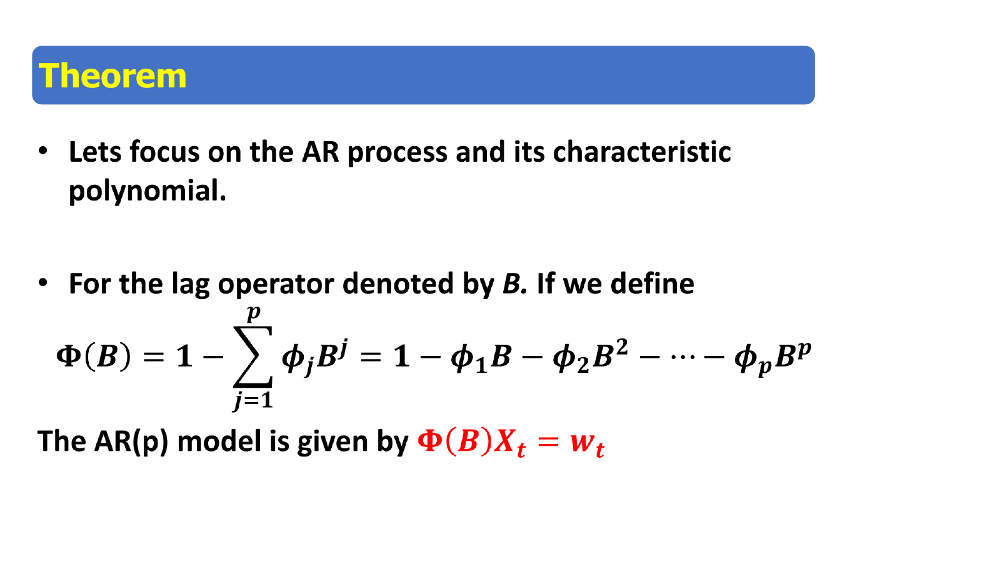
เริ่มจาก \(\Phi(B)=1-\phi_1B-\dots-\phi_pB^p\) และโมเดล \(\Phi(B)X_t=w_t\) ทฤษฎีนี้ทำงานกับพหุนามนี้โดยมอง B เป็นตัวแปรธรรมดา เช่น AR(1) ที่ φ = 0.5 มี \(\Phi(B)=1-0.5B\)
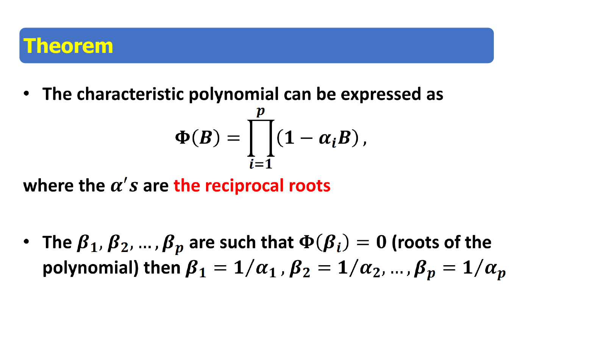
พหุนามดีกรี p แยกตัวประกอบได้เป็น \(\prod_{i=1}^{p}(1-\alpha_iB)\) โดย α คือ the reciprocal roots เพราะถ้าแทน \(B=1/\alpha_i\) วงเล็บนั้นจะเป็นศูนย์ รากจริงของพหุนามจึงเป็น \(\beta_i=1/\alpha_i\) ตัวอย่าง: \(\Phi(B)=1-1.1B+0.3B^2=(1-0.5B)(1-0.6B)\) ตรวจโดยกระจาย: \(0.5+0.6=1.1\) และ \(0.5\times0.6=0.3\) ได้ α = 0.5, 0.6 และราก β = 2, 1.667
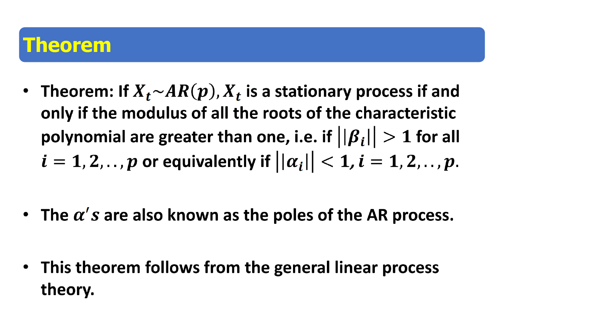
1 ทุกตัว หรือ |α_i| < 1" loading="lazy">ทฤษฎีบท: AR(p) นิ่งก็ต่อเมื่อ modulus ของรากทุกตัวมากกว่า 1 หรือเทียบเท่ากับ |α| ทุกตัวน้อยกว่า 1 ดูตัวอย่างสามแบบ
คำว่า modulus ใช้เมื่อรากเป็นจำนวนเชิงซ้อน เช่น φ = (1, −0.5): \(0.5B^2-B+1=0\) ได้ \(B=1\pm i\) modulus \(\sqrt{1^2+1^2}=1.414>1\) จึงนิ่ง อาจารย์บอกว่าในข้อสอบ "ส่วนใหญ่จะเป็นจำนวนจริง" (Class 7-2, 0:16:52) และจะมีแค่สมการกำลังสอง (Class 6, 1:24:42) สไลด์เรียก α ว่า poles ของ AR และบอกว่าทฤษฎีนี้มาจาก general linear process ซึ่งไม่ต้องพิสูจน์ในวิชานี้
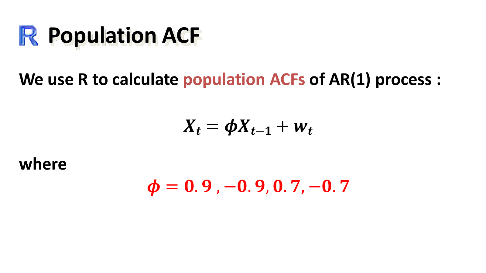
R มีสองคำสั่งที่ต้องแยกให้ออก (Class 6, 0:22:47–0:28:11) ARMAacf() คำนวณ ACF ตามทฤษฎีจากสูตร "เป็น Theory เลย ... เอามาจากสูตรจริง ๆ" ไม่มีความสุ่ม รันกี่ครั้งก็ได้ค่าเดิม ส่วน arima.sim() สร้างข้อมูลสุ่มจากโมเดล แล้วใช้ acf() หา sample ACF ซึ่งเปลี่ยนทุกครั้งที่รัน
acf = ARMAacf(ar = c(0.9), lag.max = 20)
plot(acf, x = 0:20, type = "h", ylim = c(-1,1), xlab = "lag",
ylab = "Autocorrelation", main = "Population ACF (phi=0.9)")
abline(h = 0)| โค้ด | ทำอะไร |
|---|---|
| ARMAacf(ar = c(0.9), lag.max = 20) | คืนเวกเตอร์ ρ₀ ถึง ρ₂₀ = 1, 0.9, 0.81, … ใส่ ma = ... สำหรับ MA ได้เช่นกัน |
| x = 0:20 | แกนนอนเริ่มที่ lag 0 เพราะ ARMAacf คืนค่า ρ₀ = 1 มาด้วย |
| type = "h" | วาดเป็นแท่งแนวตั้งเหมือนกราฟ ACF |
| ylim = c(-1,1) | ให้แกนตั้งครบ −1 ถึง 1 เพื่อเห็นค่าติดลบของ φ = −0.9 |
| abline(h = 0) | เส้นอ้างอิงที่ศูนย์ ไม่มีเส้นประ ±2/√n เพราะเป็นค่าทฤษฎี ไม่มี sampling error |
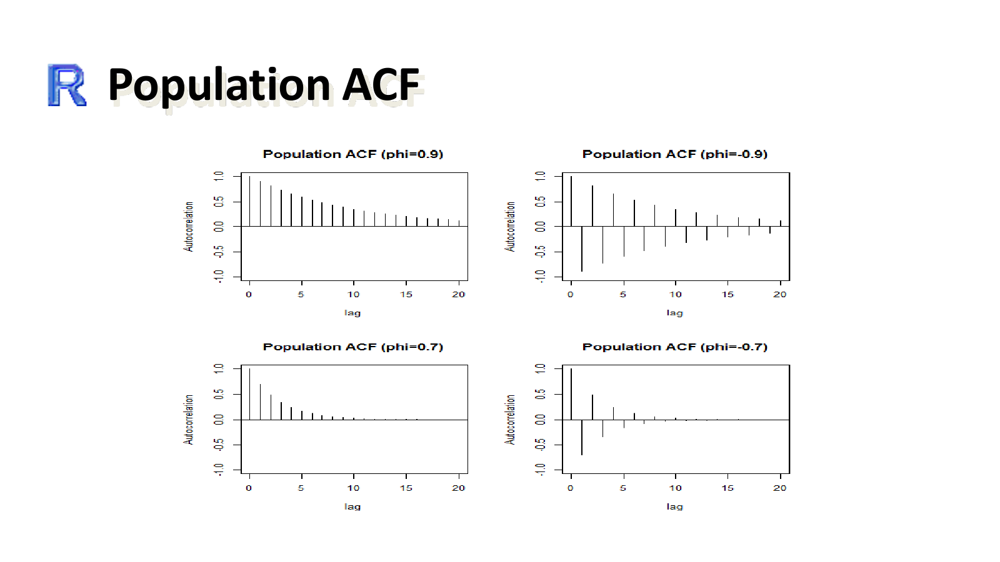
สี่กราฟตรงกับตารางในหัวข้อ 9: φ = 0.9 ลดช้าและบวกทั้งหมด (0.9, 0.81, 0.729), φ = −0.9 สลับเครื่องหมายและลดช้า (−0.9, 0.81, −0.729), φ = 0.7 ลดเร็วกว่า (0.7, 0.49, 0.343) และ φ = −0.7 สลับเครื่องหมายและลดเร็ว (−0.7, 0.49, −0.343) สังเกตว่า lag 2 ของ φ = 0.7 และ −0.7 เท่ากันที่ 0.49 เพราะกำลังคู่ลบเครื่องหมายทิ้ง
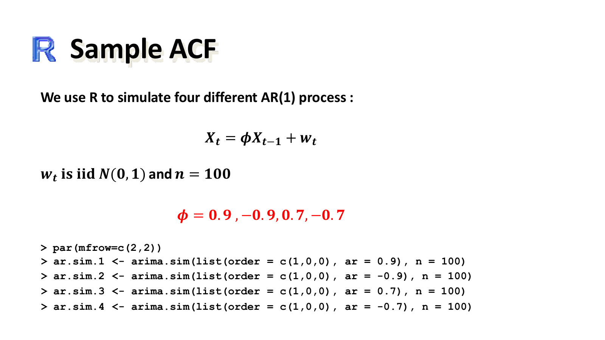
สไลด์ simulate สี่อนุกรมด้วย arima.sim(list(order = c(1,0,0), ar = φ), n = 100) โดย order = c(1,0,0) คือ p = 1, d = 0, q = 0 ถ้าใส่ φ ที่ทำให้ไม่นิ่ง เช่น ar = 1.2 R จะแจ้ง error ว่า 'ar' part of model is not stationary เพราะ arima.sim ตรวจรากตามทฤษฎีบทในหัวข้อ 10 ก่อนสร้างข้อมูล อาจารย์บอกประโยชน์ของ simulation ว่าใช้ทำ simulation study ใน IS หรือ thesis "ขึ้นอยู่กับ advisor" (Class 6, 0:26:41)
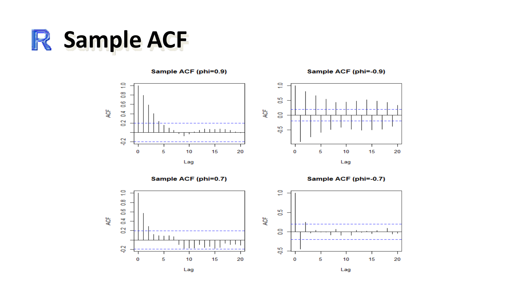
sample ACF ทั้งสี่มีรูปแบบเดียวกับ population ACF: บวกลดช้า สลับเครื่องหมาย และลดเร็ว แต่แท่งที่ lag สูงไม่เป็นศูนย์พอดี บางแท่งแตะเส้นประ ±0.2 ทั้งที่ค่าทฤษฎีเล็กมาก นี่คือ sampling error จากข้อมูลแค่ 100 ค่า อาจารย์เตือนว่า AR(1) φ = 0.7 บางคน "อาจจะคิดว่าเป็น MA(2)" ถ้าดูจาก simulation (Class 6, 0:23:56) เพราะ ρ₁ = 0.7 และ ρ₂ = 0.49 ทะลุเส้น ส่วน ρ₃ = 0.343 กับ ρ₄ = 0.24 อาจตกลงมาในเส้นเมื่อมี noise ดูเผิน ๆ จึงเหมือน "ตัดหลัง lag 2" วิธีแยกคือดูว่าค่าลดลงทีละสัดส่วนเดิม (0.7 → 0.49 → 0.34) หรือไม่ และใช้ PACF ใน Lesson 6
ท้าย Class 5 อาจารย์รวมสองโมเดลเป็นหนึ่ง (Class 5, 2:07:30–2:10:13): \(\Phi(B)X_t=\theta(B)w_t\) เรียกว่า ARMA(p,q) ด้านซ้ายคือส่วน AR ด้านขวาคือส่วน MA ARMA(1,0) คือ AR(1) และ ARMA(0,2) คือ MA(2) "ถ้าเกิดนิสิตเซิร์ชคำว่า Box-Jenkins มันจะเขียนโมเดลอันนี้อันเดียว เพราะอันนี้ cover ทุกอย่าง" สิ่งที่ยังขาดคือ I (differencing) "แต่มันไม่ได้ยากหรอก ไอแค่เติมนิดเดียว" ซึ่งจะเติมใน Lesson 6
ตัวอย่างการเขียน: \(X_t=0.5X_{t-1}+w_t+0.4w_{t-1}\) ย้าย X ไปซ้ายได้ \((1-0.5B)X_t=(1+0.4B)w_t\) จึงเป็น ARMA(1,1)
| MA(q) | AR(p) | |
|---|---|---|
| สมการ | \(X_t=\theta(B)w_t\) | \(\Phi(B)X_t=w_t\) |
| ค่าวันนี้มาจาก | shock วันนี้และย้อนหลัง q วัน | ค่าของตัวเองย้อนหลัง p วัน บวก shock |
| Mean (ไม่มีค่าคงที่) | 0 | 0 |
| γ₀ ของอันดับ 1 | \(\sigma^2(1+\theta^2)\) | \(\sigma^2/(1-\phi^2)\) |
| ACF ของอันดับ 1 | \(\rho_1=\theta/(1+\theta^2)\), \(\rho_h=0\) เมื่อ h ≥ 2 | \(\rho_h=\phi^h\) |
| รูปร่าง ACF | ตัดเป็นศูนย์หลัง lag q | tail off (ลดแบบเลขชี้กำลัง หรือสลับเครื่องหมาย) |
| นิ่งเมื่อ | เสมอ | รากของ Φ(B) มี modulus มากกว่า 1 ทุกตัว |
| ACF ใช้หา order ได้ไหม | ได้ q = lag สุดท้ายที่ทะลุเส้น | ไม่ได้ ใช้ PACF (Lesson 6) |
ไฟล์ R_codes_1.txt, R_codes_2.txt และ XBOX.txt อยู่ในโฟลเดอร์ CLASS 5 บน myCourseVille ข้อที่ต้องใช้ zlag() ต้องติดตั้ง package TSA ก่อน
\(\gamma_0=2(1+0.16+0.09)=2(1.25)=2.5\)
\(\gamma_1=2(\theta_1+\theta_1\theta_2)=2(0.4-0.12)=0.56\)
\(\gamma_2=2\theta_2=-0.6\) และ \(\gamma_3=0\)
\(\rho_1=0.56/2.5=0.224\), \(\rho_2=-0.6/2.5=-0.24\) σ² ไม่มีผลต่อ ρ เพราะตัดกัน
\(\mu=6/(1-0.8)=30\)
\(\gamma_0=9/(1-0.64)=9/0.36=25\) ค่าคงที่ 6 ไม่มีผลต่อ variance
\(\rho_2=0.8^2=0.64\) และ \(\gamma_2=0.64\times25=16\)
\(\rho_1=\theta/(1+\theta^2)\) และ \((1-|\theta|)^2\ge0\) กระจายได้ \(1+\theta^2\ge2|\theta|\)
หารด้วย \(2(1+\theta^2)>0\) ได้ \(|\theta|/(1+\theta^2)\le1/2\) คือ \(|\rho_1|\le1/2\)
เท่ากันเมื่อ \(|\theta|=1\): θ = 1 ได้ ρ₁ = 1/2 และ θ = −1 ได้ ρ₁ = −1/2
\(\gamma_0=\mathrm{Var}(\phi X_{t-1}+w_t)=\phi^2\mathrm{Var}(X_{t-1})+\sigma^2\) ใช้ \(\mathrm{Cov}(X_{t-1},w_t)=0\) (shock ใหม่ไม่สัมพันธ์กับอดีต)
ความนิ่งทำให้ \(\mathrm{Var}(X_{t-1})=\gamma_0\) จึงได้ \(\gamma_0(1-\phi^2)=\sigma^2\) และ \(\gamma_0=\sigma^2/(1-\phi^2)\) ต้องมี |φ| < 1
\(\gamma_1=\mathrm{Cov}(X_t,\phi X_t+w_{t+1})=\phi\gamma_0\) ใช้ \(\mathrm{Cov}(X_t,w_{t+1})=0\)
ทำซ้ำ \(\gamma_h=\phi\gamma_{h-1}=\phi^h\gamma_0\) หารด้วย γ₀ ได้ \(\rho_h=\phi^h\)
θ = 4: ρ₁ = 4/17 = 0.235 และ θ = 0.25: ρ₁ = 0.25/1.0625 = 0.235 ส่วน ρ_h = 0 เมื่อ h ≥ 2 ทั้งคู่ ทั่วไป \((1/\theta)/(1+1/\theta^2)=\theta/(\theta^2+1)\)
ข้อมูลให้เพียง ACF จึงแยกสองโมเดลไม่ออก ถ้าไม่กำหนดเงื่อนไข การประมาณ θ จะไม่มีคำตอบเดียว อาจารย์เลือกค่าที่ |θ| < 1 คือ 0.25 ("อันที่ใช้ได้คือ 1/7 ไม่ใช่ 7") เงื่อนไขนี้คือ invertibility ใน Lesson 7
ets(sales_ts) ของ Xbox ได้ ETS(M,A,M) ข้อใดอธิบายโมเดลนี้ถูก(ก) moving average ใน Lesson 4 เฉลี่ยค่าที่สังเกตได้ X เพื่อทำให้เรียบ MA(q) เป็นโมเดลที่ X_t เป็นผลรวมถ่วงน้ำหนักของ shock w ที่สังเกตไม่ได้
(ข) X_t ของ MA(q) กับ X_{t+h} ไม่มี shock ร่วมเมื่อ h > q ACF จึงเป็นศูนย์ทันทีหลัง lag q ส่วน AR ส่งผลต่อกันเป็นทอด ๆ ρ_h = φ^h ไม่เป็นศูนย์ที่ lag ใด ACF ของ AR(1) กับ AR(2) จึงลดลงช้า ๆ เหมือนกัน แยก p ไม่ได้
(ค) ρ₁ = 0.7, ρ₂ = 0.49 ทะลุเส้น 0.2 ชัด ส่วน ρ₃ = 0.343, ρ₄ = 0.24 อยู่ใกล้เส้น sampling error จาก n = 100 อาจดึงให้ตกลงมาในเส้น จึงดูเหมือนตัดหลัง lag 2 ต้องดูว่าค่าลดลงทีละสัดส่วนเดิมหรือไม่ และใช้ PACF
ฟิต MA(1) กับข้อมูล 100 ค่าได้ผลดังนี้ ข้อใดถูก
Coefficients:
ma1 intercept
0.8676 -0.1834
s.e. 0.0500 0.1965
sigma^2 estimated as 1.117อนุกรมยาว 100 ค่า ได้ sample ACF ดังนี้ จงเลือกโมเดลและให้เหตุผล และอธิบายว่าทำไม lag 1 จึงไม่เท่ากับ 0.497 ถ้าข้อมูลมาจาก MA(1) θ = 0.9 จริง
lag: 1 2 3 4 5 ACF: 0.412 -0.047 0.156 0.156 -0.002
เส้นประคือ \(\pm2/\sqrt{100}=\pm0.2\) มีแค่ lag 1 = 0.412 ที่ทะลุเส้น lag 3 และ 4 = 0.156 ยังอยู่ในเส้น จึงตัดหลัง lag 1 เลือก MA(1) และ ρ₁ บวกจึงคาดว่า θ เป็นบวก
0.412 เป็นค่าจาก sample ที่มีความคลาดเคลื่อน ค่าทฤษฎี 0.497 เป็นค่าเฉลี่ยระยะยาว แต่ละชุดข้อมูล 100 ค่าให้ค่าต่างกันไป ข้อมูลชุดนี้คือ arima.sim ด้วย set.seed(2603630)
รันโค้ดนี้แล้วเทียบผลกับค่าทฤษฎี
round(ARMAacf(ma = c(-0.9, 0.7), lag.max = 4), 3)
round(ARMAacf(ar = 0.7, lag.max = 5), 3)
set.seed(2603630); m <- arima.sim(list(order=c(0,0,1), ma=0.9), n=100)
round(acf(m, plot=FALSE, lag.max=5)$acf[2:6], 3)
arima(m, order = c(0,0,1))
set.seed(2603630); a <- arima.sim(list(order=c(1,0,0), ar=0.9), n=100)
arima(a, order = c(1,0,0))
try(arima.sim(list(ar = 1.2), n = 10))1 -0.665 0.304 0 0 (MA(2) ตรงกับสูตรหัวข้อ 6) 1 0.7 0.49 0.343 0.24 0.168 (AR(1) = 0.7^h) 0.412 -0.047 0.156 0.156 -0.002 (sample ACF ของ MA(1)) ma1 0.8676 (s.e. 0.0500) intercept -0.1834 sigma^2 1.117 aic 302.23 ar1 0.9105 (s.e. 0.0391) intercept 0.3129 sigma^2 1.069 aic 298.26 Error: 'ar' part of model is not stationary
ค่าประมาณ θ̂ = 0.868 และ φ̂ = 0.911 ใกล้ค่าจริง 0.9 ทั้งคู่ บรรทัดสุดท้ายยืนยันทฤษฎีบทในหัวข้อ 10: φ = 1.2 มีราก 1/1.2 = 0.83 น้อยกว่า 1 R จึงไม่ยอมสร้างข้อมูล ตัวเลขของ arima.sim อาจต่างเล็กน้อยถ้าใช้ R คนละเวอร์ชัน
รัน R_codes_1.txt กับ XBOX.txt (แก้ชื่อไฟล์ให้ตรง) แล้วตอบ: ค่าพยากรณ์มกราคม 2015 ของ ETS กับของ decomposition แบบ regression เป็นเท่าใด ต่างกันกี่เท่า และเพราะอะไร
ETS(M,A,M) alpha 0.3619 beta 0.0156 gamma 0.419 ETS: Jan 42941.97 Feb 42531.02 Mar 33242.12 trend: 388917.9 + 249.72 t regression: Jan 342461.0 Feb 317604.6 Mar 277801.0 decompose+ARIMA: Jan 64964.23 Feb 70638.84 Mar 64994.34
regression สูงกว่า ETS ราว 8 เท่า ยอดขายขึ้นถึงปี 2011 (7.97 ล้าน) แล้วลดลงเหลือ 1.45 ล้านในปี 2014 เส้นตรงที่ฟิตทั้ง 110 เดือนยังมีความชันบวก จึงพยากรณ์สูงเกินจริงมาก (มกราคม 2014 ขายได้ 108,003) ETS ปรับ level ตามข้อมูลล่าสุดจึงตามขาลงทัน decomposition ด้วย regression เหมาะเมื่อ trend เป็นเส้นตรงจริง
บทถัดไป: Lesson 6 — AR(2), PACF และ ARIMA
| หน้า | เนื้อหา | สอนที่ |
|---|---|---|
| 1 | ปก Model for Stationary Time Series (Part 1) | etc — ปก |
| 2–5 | Review detrending, differencing, Looking ahead | หัวข้อ 2 |
| 6–8 | นิยาม MA(q), Σ, θ(B) | หัวข้อ 3 |
| 9–10 | MA(1) property | หัวข้อ 4 |
| 11–16 | MA(1) simulation θ = ±0.9 | หัวข้อ 5 |
| 17–21 | MA(2) และ simulation | หัวข้อ 6 |
| 22 | MA(q) process | หัวข้อ 3 |
| 23 | Box-Jenkins Model | หัวข้อ 2 |
| 24–25 | Summary MA(q) ที่มี μ | หัวข้อ 3 |
| 26 | QUIZ Moving average process | หัวข้อ 7 |
| 27–31 | AR(p), Φ(B), mean และ intercept | หัวข้อ 8 |
| 32–34 | AR(1) และ ACF | หัวข้อ 9 |
| 35–37 | Theorem รากของ characteristic polynomial | หัวข้อ 10 |
| 38–41 | Population ACF และ sample ACF ใน R | หัวข้อ 11 |
| แหล่ง | ช่วงที่ใช้ | หัวข้อ |
|---|---|---|
| Class 5 | 0:46–1:04 Xbox, 1:04–2:10 Box-Jenkins, MA, AR, ARMA | 1–8, 12 |
| Class 6 | 0:00–0:30 γ ของ AR(1), รูปร่าง ACF, ARMAacf กับ arima.sim; 1:15–1:26 เงื่อนไขของ φ | 9–11 |
| Class 7-2 | 0:16–0:20 modulus ของราก | 10 |
| R_codes_1.txt, R_codes_2.txt, XBOX.txt (CLASS 5) | ทั้งไฟล์ | 1, 5, 6, 11, 13 |